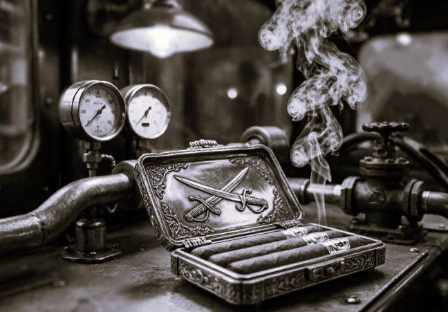
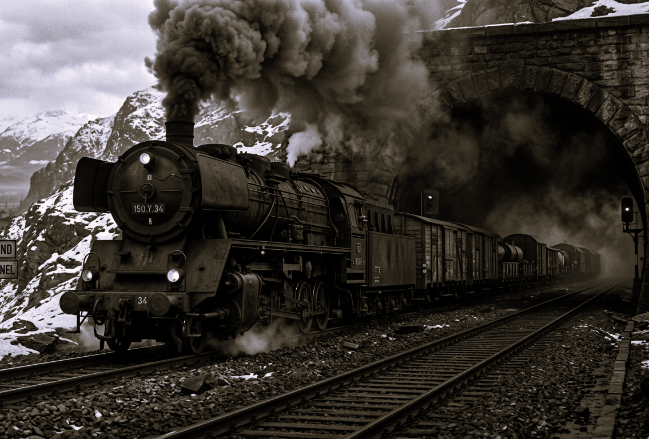
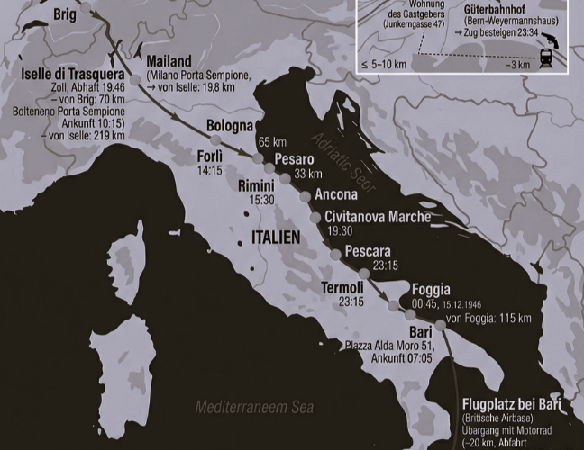
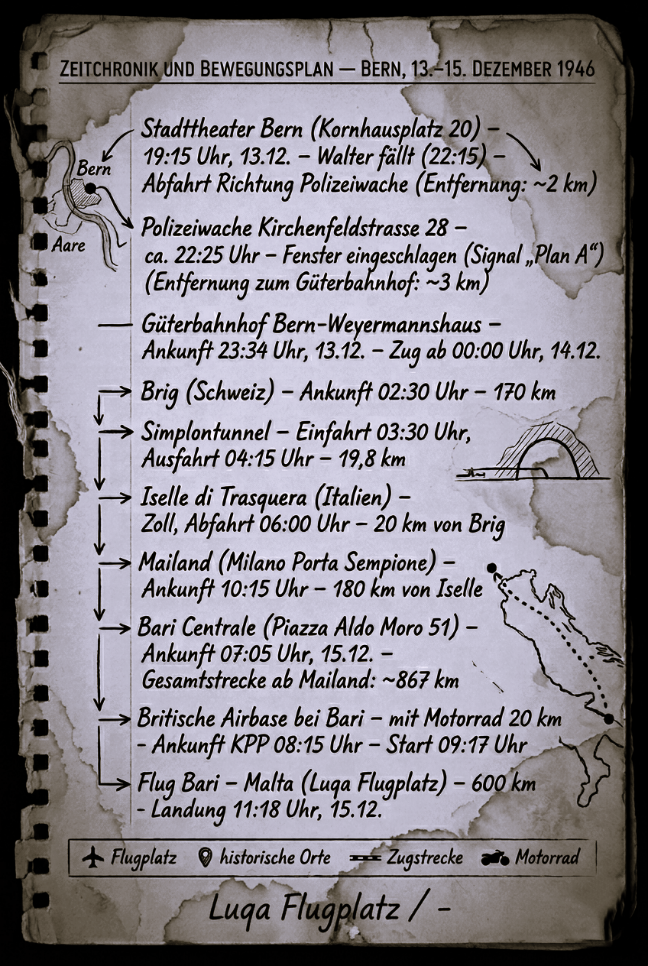
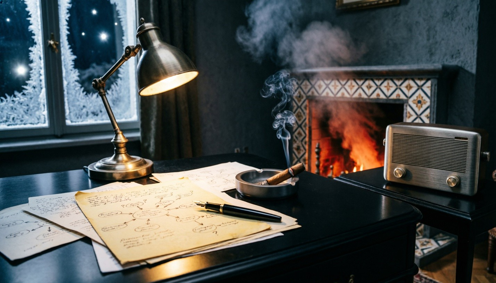

ВТОРОЙ ЗВОНОК
К декабрю 1946 года Европа превратилась в гигантский шпионский полигон, где старые правила игры окончательно перестали действовать. Эпоха «аристократов духа», для которых шпионаж был делом чести, теснилась новой реальностью — технократической властью корпораций и теневых организаций. Старая школа уходила, уступая место холодному расчёту, где человек становился лишь винтиком в системе, а секретная информация — строчкой в балансе активов.
Послевоенная Швейцария оказалась в эпицентре этой трансформации: кантоны стали гигантским фильтром для золотых запасов и капиталов, переправляемых в Латинскую Америку. Завершение Нюрнбергского процесса и подписание Парижских договоров закрепили раздел Европы, но лишь обнажили раскол, который позже назовут Холодной войной.

ТЕМА: Оценка оперативной обстановки в Берне и сопредельных регионах.
1. ОБСТАНОВКА
5 марта 1946 года Черчилль выступил в Фултоне. В речи зафиксировано размежевание позиций США и Великобритании, с одной стороны, и СССР — с другой. Оперативная информация, поступавшая с 1945 года, подтверждает: противостояние между бывшими союзниками по антигитлеровской коалиции перешло в открытую фазу.
Берн, сохраняя нейтралитет, является точкой пересечения интересов всех сторон. Наблюдается активизация дипломатических и разведывательных миссий.
2. ОПЕРАТИВНАЯ ОЦЕНКА ПО НАПРАВЛЕНИЯМ
2.1. Американское направление
С 3 сентября 1946 года действует операция «Пэйперклип». Цель — привлечение немецких и австрийских специалистов в США и недопущение их перехода в СССР. Программа санкционирует вербовку до 1000 специалистов с предоставлением долгосрочных контрактов и возможностью переезда семей.
Агентурные данные подтверждают, что к настоящему моменту не менее 180 учёных получили контракты. Конечная численность участников: не менее 1500 человек.
Вывод: США выстраивают технологическое превосходство, используя кадровый потенциал побеждённой Германии. Берн — один из транзитных узлов для переправки этих специалистов.
2.2. Британское направление
МИ‑6 сохраняет присутствие. Основной интерес — контроль над бывшими немецкими активами.
Вывод: Британское присутствие стабильно, но уступает американскому по активности и ресурсам.
2.3. Французское направление
Офицеры разведки работают с начала 1946 г. Сеть разворачивается. Французы поддерживают контакты со всеми сторонами.
Вывод: Французская активность носит зондирующий характер. Самостоятельной роли не имеет.
2.4. Советское направление
Дипломатические отношения восстановлены 18 марта 1946 года. Миссия размещена временно.
Разведывательная деятельность ведётся, внешне не проявляется. СССР активизирует информационную деятельность в Южной Америке.
2.5. Аргентинское направление
С января 1946 года Аргентина стала одним из основных центров приёма бывших нацистских функционеров. По агентурным данным до 5000 бывших нацистских военных преступников осели в Аргентине.
Имеются документальные подтверждения перевода личного состояния Германа Геринга в Аргентину через Швайцербанкферайн в Женеве — 20 миллионов долларов.
2.6. Швейцарский транзит
Швейцария остаётся основным коридором для вывода капиталов бывшего рейха, транзита скомпрометированных лиц и легализации активов через банковскую систему.
3. ВЫВОДЫ
Британия, а за ней – США выстраивают новый миропорядок. Приоритетные направления для Сетки: кадровый трафик, финансовые потоки, Карибский регион, блокировка усиления позиций Аргентины.
4. Краткосрочное планирование: Парижские мирные договоры
Подписание договоров назначено на 10 февраля 1947 года. Договоры заключаются между союзными державами и бывшими союзниками Германии.
Оперативное значение для Сетки: Италия попадает под прямое действие договора. Маршруты транзита через итальянскую территорию могут измениться.
ЦЕНТР
НАПРАВЛЕНИЯ РАБОТЫ:
Контроль нелегальных маршрутов между Европой и Латинской Америкой (Аргентинская Республика, Доминиканская Республика, Гаити, Куба). Выявление и пресечение перемещения активов от структур бывшего рейха и личных средств чинов Абвера, СС, Гестапо. Особое внимание — каналам, использующим контрабанду как прикрытие для вывода золота, валюты и ценностей. Приоритет — Швейцария, Италия, Испания.
Сбор и блокировка материалов, способных повлиять на подготовку Парижских мирных договоров. Выявление лиц, использующих компромат для давления на процесс.
Переход на новые методы передачи разведданных. Активация ранее законсервированных агентов. Обновление оперативных каналов.
ЦЕНТР
НОЧЬ
Берн, 12 декабря 1946 года, 23:07.
(Junkerngasse 63)
Пять сигар назад он начал ждать. Пепел не падал — он снимал его точно в последний момент, двумя короткими движениями пальцев. Без суеты. Без взгляда. Так же, как когда-то снимал людей с должностей, страны с карт, а вопросы повестки.
Он всегда успевал раньше. На шаг. На два. На жизнь вперед.
В кабинете было холодно. Не по забывчивости — по убеждению. В декабре он никогда не включал отопление. Холод дисциплинировал мысли. Холод не позволял расслабляться памяти. Деревянные панели стен, помнящие ещё эпоху великих потрясений, впитывали этот холод, становясь почти каменными. Каждая деталь в этом кабинете была продумана до мелочей.

Тонкая секундная стрелка Patek Philippe почти бесшумно резала время на одинаковые ломтики. Он ни разу не посмотрел на часы за этот вечер, но знал каждую минуту. Музыка закончилась. Граммофон продолжал вращаться, но игла лишь царапала дорожку.
Потом настала очередь Рихтера.
Allegro non troppo e molto maestoso [Не слишком быстро и очень величественно].
Тяжёлые первые такты медленно наполнили кабинет весом. Рихтер никогда не играл для слушателя — он играл для вечности. Ему нужно было ещё немного времени, чтобы подготовиться к тому, что должно было произойти.
На столе лежали пять коротких сигарных остатков — одинаковых, аккуратных, почти симметричных. Он всегда тушил сигару раньше, чем огонь добирался до пальцев. Так было правильно. Так было всегда. В этом была вся его жизнь: не дожидаться, пока огонь обожжет, а самому решать, когда пора остановиться.
Телефон молчал. Он открыл барабан револьвера. Проверил ещё раз, хотя проверять было нечего. Пять пустых камор. Одна внутри. Щелчок металла прозвучал неожиданно громко, разрезав музыку. Вот теперь он был готов.
Оставался второй звонок.
Вальтер вошёл тихо. Но старые половицы всё равно отозвались едва заметной вибрацией под ковром. Им было двести шестьдесят три года, и за это время они научились различать людей по весу их шагов. Вальтер промок насквозь.
От мокрого пальто и широкой спины поднимался пар. Дождь, казалось, ещё держался за него, не желая отпускать.
Он ничего не сказал. Только кивнул. Человек за столом не ответил. Даже не пошевелился. Свет зелёной лампы лежал на его лице неподвижно, как на бронзе памятника. Вальтер постоял ещё секунду, словно ожидая чего-то, но затем развернулся и вышел. Половицы снова дрогнули.
Дверь закрылась. Дом успокоился.
И только тогда он медленно открыл барабан револьвера. Пять пустых. Одна внутри. Несколько секунд он смотрел на патрон так, будто видел его впервые.
Второй звонок прозвенел не здесь. Там, где должен был.
Завтра газеты выйдут как обычно. Радио будет говорить обыденными голосами. Ещё девять с половиной сигар и город проснётся.
Он выключил лампу. И темнота сразу заняла своё место, навсегда закрыв этот эпизод.

СОДЕРЖАНИЕ:
Каналы связи с Карибским направлением установлены. Резервные линии законсервированы. Новый способ передачи данных через культурное мероприятие будет проверен в течение 24 часов.
По доминиканской линии: контакт с объектом налажен. Информация о радарных системах собрана.
По аргентинской линии: объект идентифицирован. Требуется дальнейшая разработка.
УТРО
Берн, 13 декабря 1946 года, 7:43.
(Junkerngasse 63)
Половицы отозвались не сторожевым скрипом, а намеренно чётким стуком. Дверь поддалась без усилия. Гость переступил порог — и на полушаге задержался. Лампа слева. Глобус справа. Корешки на третьей полке — в том же порядке. Берн и лондонский Вест-Энд. Одно и то же.
В руке — утренняя газета, вышедшая раньше обычного. Плотно сложенная вчетверо. Не для чтения. Как пропуск. Он не стал её разворачивать. Лишь чуть наклонил лист, указывая взглядом на крошечную заметку в нижнем углу. Хозяин не стал искать глазами текст. Ему хватило угла наклона и той абсолютной тишины, с которой гость на неё посмотрел. Утвердительно кивнул.
Он насторожился. Как будто вошёл не в чужую берлогу, а в свою.
Хозяин сидел тихо. Без приветствия. Без позы. Просто положил на центр стола разряженный накануне револьвер. Металл коснулся дерева ровно.
Гость потянулся во внутренний карман. Пальцы прошли мимо зажигалки. Маузер вышел первым — неприлично тяжёлый, повис в воздухе, пойманный за дуло. Небоевой хват. Инструмент, а не угроза. Ответ на револьвер, лежащий между ними. Так учили там, где цена ошибки измерялась не в днях, а в секундах.


Хозяин не посмотрел на ствол. Его взгляд скользнул поверх линз на сигарную коробку в руке гостя, затем медленно перевёл на свою, лежащую у локтя.
Гость проследил за этой траекторией. Потёртый угол. Запах влажной кожи и горькой смолы. Но дело было не в марке. Дело было в том, что этот табак не продавали. Его растили в Ломас-де-Байре, сушили в пещерах и курили только те, кто прошёл через «Колу».
Холодный бернский воздух мгновенно наполнился памятью о том аде. Хозяин увидел, как дрогнул кадык гостя. Они оба вспомнили. «Колу» — ту самую душную мясорубку севернее Сантьяго, где не было ни законов, ни жалости, только инстинкт и тяжёлый, липкий дым, который въедался в лёгкие навсегда. Тот, кто выжил в Коле, носил этот запах на себе, как шрам. Сигара в руке гостя была не роскошью. Это был шибболет. Пропуск в клуб тех, кто видел дно и вернулся.
Хозяин медленно кивнул. Взгляд больше не сканировал угрозу.
Зажигалка щёлкнула у обоих почти одновременно. Пламя не коснулось табака — сначала обожгли торец. Медленное вращение. Триста шестьдесят градусов за две секунды. Торец покраснел ровным кольцом. Сигары поднялись ко рту. Первый затяг — длинный, ровный, на вдохе. Головы слегка наклонились вперёд. Выдох пошёл не вверх, а горизонтально, в разные стороны.
Два потока дыма, холодные и плотные, встретились в центре комнаты. Они не смешивались хаотично — они сплелись в единый жгут, потянувшись к потолку, воссоздавая в этом стерильном кабинете ту самую вязкую, непроглядную духоту.
Свет лампы не касался лиц. Он подсвечивал только границу слияния.
Ни слова. Гость опустил сигару, губы едва шевельнулись. Чётко, без мимики, только артикуляция, отточенная годами молчания:
— А-це-пе.
Пауза. Дым дрогнул.
Хозяин ответил так же губами, без звука, только формой рта, повторяя ритм гостя:
— Мис-мо.
Тот же.
Гость кивнул. Не головой — плечами. Развернулся. Половицы снова дрогнули, но уже на прощание.
Дверь закрылась. Дом выдохнул.
На столе остался только дым, остывающий металл разряженного револьвера и вращающаяся пластинка.
Рихтер. Тот же концерт для фортепиано с оркестром. Такая же запись. Но как чертовски хорошо он сыграл в этот раз. Не для вечности. Для их двоих.
Игла коснулась бегунка. Тишина заняла своё место.

СРОЧНО
По подтверждённым источникам, таможенный и пограничный контроль на швейцарско-итальянской границе не осуществляется в период с 20:00 пятницы до 5:00 понедельника.
Этот режим будет действовать с 13 по 26 декабря 1946 года.
АГЕНТ
ТРАВИАТА
Берн, 13 декабря 1946 года, 19:15.
(Kornhausplatz 20)
Берн встречал Рождество. Тринадцатое декабря выпало на пятницу.
Суеверные перекрестились, запирая двери, но театр был полон. Город пах хвоей, мёдом и мокрым камнем — снег обещали, но пришла оттепель, и мостовые блестели как зеркала. На углах продавали жареные каштаны, завернутые в газетные кульки, а в витринах магазинов стояли пирамиды из жестяных банок с гусиным паштетом и фарфоровые ангелы с позолотой.
Хозяин вышел из машины в четверть восьмого. Тёмно-синее пальто из верблюжьей шерсти, серая фетровая шляпа с полями, опущенными ровно настолько, чтобы скрыть глаза при встречном свете, чёрные лайковые перчатки — тонкие, как вторая кожа. Он чувствовал холод, просачивающийся сквозь лайку, но не морщился.
Лица он не прятал. Его лицо не состояло ни в одной картотеке. Он существовал только в агентурных донесениях под псевдонимом, который менялся каждые три месяца.
Он поймал косой взгляд сотрудника аргентинского посольства. Хозяин видел его прошлым летом в ресторане «Белвью» — тот слишком долго не отрывал глаз от портфеля.
Тогда он запомнил лицо: узкое, с длинным носом, левая бровь чуть выше правой. На лацкане его чёрного костюма поблёскивал значок дипломатического клуба.
Аргентина после войны превратилась в рассадник. Нацистское золото, фальшивые паспорта, люди с изменённой внешностью.
Сборище клопов, — подумал Хозяин. Разведки всего мира роились там. Но судьбы решались здесь.
После оперы нужно проверить, не идёт ли за ним хвост. Паранойя была не болезнью, а профессией.
Он вошёл в фойе.
Тепло ударило в лицо, смешав запахи — лакового паркета, дорогих духов, старого дерева от панелей. Швейцар в сине-золотой ливрее узнал его, учтиво поклонился. Хозяин отдал пальто, получил латунный номерок на скользком шнурке.
Программа спектакля лежала в левом внутреннем кармане. Тонкая книжица, пахнущая типографской краской и миндалём. Сегодня вечером у неё особая роль.
Ложа №3 — справа от сцены. Дверь тяжёлая, обитая бархатом, вытертым на сгибе. Он вошёл.
Здесь было всего два кресла, обитых старым пунцовым плюшем — колючим, протёртым до ниток. Справа — барьер из тёмного дерева, отполированный локтями сотен зрителей. Слева — пустое кресло. Он заказал два билета, но второй всегда оставался незанятым.
Хозяин сел. Плюш скрипнул. Он положил программу на барьер. Потом, в антракте, сложит её вдвое и оставит здесь.

Люстру в зале погасили, горел только газовый рожок над сценой. Оркестр настраивался — гобой взял «ля», скрипки отозвались. Гул голосов стихал. Хозяин окинул взглядом партер.
Занавес поднялся. Оркестр заиграл увертюру. Виолетту пела высокая немка с русской фамилией. Она изображала итальянскую куртизанку с французским акцентом. Хозяин мысленно поставил: техника — восемь, искренность — три.
Дальше он не слушал. Он ждал.
Тенор Ди Стефано должен был появиться только во втором акте. Сейчас на сцене шли бальные сцены — хор, танцы, мишура. Хозяин смотрел на дирижёра, на скрипачей, на контрабасиста — у того дрожал смычок, он был простужен. Мелкие детали, из которых складывалась безопасность.
Восемь минут первого акта, — подумал он. — Если что-то пойдёт не так, я уйду в антракте. Корзину отменят. Микрофильм пойдёт запасным путём.
На сцене Виолетта запела «Ah, fors'è lui» [Ах, может быть, это он]. Хозяин знал эту арию наизусть — каждую модуляцию, каждую фермату. Он помнил, как в 1938 году в Вене слушал «Травиату» с Юсси Бьёрлингом в партии Альфреда. Любимец публики тогда не знал, что через год его страна исчезнет с карты. Хозяин знал.
Он знал все про шпионское дело. И умел практически все.
Музыку он не умел. Музыку он не учил. Она пришла с ним из того прошлого, о котором он никогда не говорил.
Он знал музыку, а музыка знала его.
Занавес опустился. Свет зажёгся. Публика зашевелилась, закашляла. Хозяин взял программку — бумага была мягкой, чуть влажной от пальцев. Положил её так, чтобы со сцены было видно, а из зала почти нет.
Так же я делал в Лиссабоне, в сорок третьем, — пришло воспоминание. — Только тогда вместо программки был билет в кино, надорванный с левого края. Тот, кто взял, надорвал правый.
Через два часа высокопоставленный офицер Абвера заснул в своей ванне навсегда.

Занавес поднялся снова. Второй акт.
На сцене — загородный дом Виолетты: деревья, нарисованные на холсте, мебель красного дерева. Вошёл Альфред.
Джузеппе Ди Стефано был красив. Тридцать два года, тёмные глаза, тяжёлый подбородок, чёрные волосы, блестящие от бриолина. Он поздоровался с публикой лёгким поклоном.
Хозяин не смотрел на него. Он смотрел на программку, сохраняя маску сосредоточенного зрителя. Краем глаза он видел: Ди Стефано бросил взгляд на ложу. Взгляд задержался на программке на долю секунды.
Понял.
Ди Стефано не знал, что означал этот знак. Его проинструктировали: если увидишь сложенную программку — всё идёт по плану. Пой, как договорились.
Оркестр заиграл арию «De' miei bollenti spiriti» [Мой пылкий дух]. Ди Стефано начал петь. А потом подошёл к слову «ardore» [пыл]. Обычно теноры берут эту фразу с крещендо, ярко, победно.
Ди Стефано спел иначе. Он атаковал ноту пиано, почти шёпотом.
Звук родился сдавленный, придавленный — как вздох. Гласная «о» тянулась чуть дольше, и вибрато стало чуть быстрее.
Публика не заметила. Одна дама в партере шепнула соседке: «Какой грустный сегодня Альфред».
Но Хозяин знал каждое дыхание Ди Стефано. Никогда — ни разу — тот не пел этот отрывок тихо.
Понял. Подтверждает. Будет действовать.
Хозяин не двинулся. Лицо осталось каменным. Но внутри — короткая сухая радость, как глоток холодной воды.
На сцене Ди Стефано стоял вполоборота. И вдруг — как от отчаяния, как будто герой не мог справиться с горем — он пять раз провёл ладонью по волосам, откидывая их назад. Жест был вписан в роль. Но счёт не случаен.
Хозяин достал серебряный портсигар. На крышке — гравировка: две скрещённые сабли. Подарок от человека, которого уже нет. Большой палец нашёл защёлку. Он пять раз открыл и закрыл портсигар. Раз. Пауза. Два. Пауза. Три. Пауза. Четыре. Пауза. Пять.
Со стороны казалось, что он просто задумался, вертя портсигар.
Пятый город. Понял.
Значит, в Лионе Ди Стефано передаст микрофильм другому человеку. Цепочка замкнётся.
Третий акт. Портсигар закрылся. Виолетта умирала. Публика плакала. Занавес опустился, поднялся под овации.

На рампу вынесли корзину белых камелий. Ивовые прутья, лак, десятки бархатных цветов, белых как снег. Лента синяя — условленный знак. Шёлковая, широкая, с золотой вышивкой: «Великому Джузеппе от почитателя».
Ди Стефано подошёл, наклонился, взял корзину. Низко поклонился, отвязал от корзины ленту, аккуратно сложил в нагрудный карман. Поклонился. Теперь микрофильм у него.
Всё. Через неделю информация будет в Париже. Фотографии радаров. Всё, ради чего утонул в ванне второй секретарь.
Улица.
Проверка хвоста. Он перешёл на другую сторону, остановился у витрины — холодное стекло, отражение его лица с двумя газовыми рожками. Никого. Завернул за угол, зажёг спичку, посмотрел на пламя. Никого.
Вернулся к театру со стороны служебного входа — темно, пахнет мочой и углём. Простоял три минуты. Ни шагов.
Чисто.
Он вышел на главную улицу. Ночь. Туман. Колокола играли где-то далеко. На углу — ёлка с гирляндами, запах жареных каштанов и хвои.
Хозяин остановился у чугунной урны. Внутри — скомканная газета. Der Bund. 13 декабря. Он знал: на последней странице, мелким шрифтом, некролог. Второй секретарь доминиканского посольства скоропостижно скончался 12 декабря. Утонул в собственной ванне.
Но там не написано, что за день до этого он выпытал у Сандроса имя Хозяина: тот сознался, что вынес папку из посольства. Сандрос был слабым человеком. Когда доктор закричал на него, сердце Сандроса не выдержало — он просто не справился с допросом.
Машина подъехала бесшумно. Чёрный «Хорьх». Он любил её.
Вальтера рядом не было. Вальтер уже далеко, с другим паспортом. Вальтер своё дело сделал, его спина после вчерашнего купания второго секретаря больше не парит.
Да и дождя вчера не было.

ВЫСТРЕЛ
Берн, 13 декабря 1946 года, 22:15.
(Kornhausplatz 20)
Хозяин обернулся.
Дверца проезжавшего мимо автомобиля распахнулась на ходу.
На мокрую рождественскую брусчатку театральной площади тяжело вывалилось тело.
Вальтер.
Шифрованное сообщение от объекта «Аргентинец» в Буэнос-Айрес. Дешифровано 13 декабря 1946 года.
ИСХОДНЫЙ ТЕКСТ (ПЕРЕВОД С ИСПАНСКОГО):
В Берне готовится акция по устранению объекта «А». Исполнитель — резидент «Вода» действует по заданию Сетки. Время акции — 13 декабря, предположительно в пределах городской черты.

…
СПОСОБЫ ОПОВЕЩЕНИЯ РЕЗИДЕНТОВ:
А) Оповещение через прессу (радио): в случае крайней необходимости и срочного характера оповещения допускается совершение правонарушения (акт вандализма, дорожное происшествие, поджог и др.), резонанс от совершения которого будет опубликован в новостях. Объекты и их соответствие кодам действий определяются и доводятся до резидентов каждые 6 месяцев.
…
ПЛАН «А»
Берн, 13 декабря 1946 года, 22:16.
(Kornhausplatz 20)
Он не подошёл к телу. Вальтер лежал на брусчатке, раскинув руки — театрально, ровно в луче единственного фонаря. Кровь растекалась под головой медленно, как патока. Рождественская ёлка на углу продолжала мигать. Шарманщик убрал инструмент и стоял, разинув рот. Кто-то закричал.
Хозяин развернулся и шагнул к «Хорьху». Дверца закрылась за ним с глухим, всасывающим звуком. Машина тронулась.
В салоне всё было готово. Дорожный саквояж стоял на полу, в нём — френч защитного цвета, бриджи, плотные ботинки на рифлёной подошве, шерстяной свитер с высоким воротником. Ни военный, ни штатский. Путешественник, каких тысячи на дорогах послевоенной Европы.
Он снял лакированные туфли. Вытащил из левого каблука камни разного веса и огранки — самая надёжная валюта в эти неспокойные времена. Из правого — маленький замшевый мешочек с кристаллами. Переложил тайники в ботинки, которые надел сейчас. Движения отточены до автоматизма.
Пальто, шляпу, перчатки, программку «Травиаты» — в саквояж. Саквояж через час отправится на дно Аре.
Вслед за ним — и «Хорьх». Водитель знал, что делать.
Через пять минут «Хорьх» остановился в переулке у полицейского участка на Крамгассе.
Участок был заперт. Пятница, тринадцатое, никого — полицейские разошлись по домам, надеясь на тихую ночь.
Хозяин вышел. В руке — монтировка из багажника. Подошёл к окну. Три рамы — одно большое окно, разделённое на три секции.
Перчатки уже на руках.
Первый удар пришёлся в центр. Стекло треснуло перекрестием, разлетелось мелкими кубиками — и потянуло за собой соседнее стекло.
Второй удар — в оставшуюся раму. Осколки посыпались внутрь, на пол, на стол дежурного.
Всё. Двенадцать секунд. Он положил монтировку на подоконник — жест, почти ритуальный.
Потом растворился в темноте.
Утром газета Der Bund напечатает короткую заметку: «Вандалы разбили окна в полицейском участке на Кирхенфельдштрассе». Для обывателей это будет просто хулиганством. Но для посвящённых разбитое стекло и оставленная монтировка означали лишь одно.
Это был условный сигнал: «План А».
Эвакуация касалась не только Хозяина. Бернская сетка должна уйти на дно, минимум на двадцать один день. Накануне рождества это было непросто для семейных агентов: La situation oblige [Ситуация обязывает], — пронеслось у Хозяина в голове. Короткая, хлёсткая французская фраза. В острые моменты он мыслил не словами, а понятиями, и этот иностранный оборот лучше всего описывал жестокую необходимость момента.
Вариантов отхода было три. Летом — четыре. Каждый — остроумный, проверенный, привязанный к дню недели.
Пятница – это грузовой состав на маслобойню в Бари.
Отправление в полночь.

Шифрованное сообщение из Берна в Буэнос-Айрес. Дешифровано 14 декабря 1946 года.
ИСХОДНЫЙ ТЕКСТ (ПЕРЕВОД С НЕМЕЦКОГО):
Клиент вылетел. Груз в пути.
Маршрут: Берн — Бриг — Милан — Генуя.
Переход через границу обеспечен (окно до 26.12).
Получатель в Буэнос-Айресе подтверждён.
Общий вес по спецификации — 20 тыс. т.
Следующий транш — после подтверждения получения.
ПОСТАВЩИК
ИНСПЕКТОР
Грузовая станция Bern-Weyermannshaus,
13 декабря 1946 года, 23:34.
(в двух километрах от Bern-Hauptbahnhof)
Товарная станция Берна дышала угольной пылью и мазутом. Он вошёл через проходную, минуя сторожа — тот спал, накрыв лицо газетой.
Состав стоял под погрузкой. Цистерны с рапсовым маслом, деревянные бочки, запах жареных семечек и металла.
В кабине локомотива горел тусклый свет. Хозяин поднялся по лесенке, открыл дверь.
Машинист обернулся. Лет пятьдесят, лицо в морщинах, руки в мазуте. На столике — два стакана, заварка, кипяток.
В углу кабины, на свернутом брезенте, сидел человек в потёртом пальто. Бледный, с глубоко запавшими глазами. Нос горбинкой. Чувствовалось, что военный, и не из простых офицеров.
— Инспекция, — сказал Хозяин, предъявляя служебное удостоверение. Настоящее, с реальными печатями и подписью.
— Приготовьте паспорта и документы на груз. Кто этот господин?
Машинист побледнел. Забормотал что-то про родственника, про пароход в Генуе.
Человек в углу молча протянул немецкий паспорт на имя Ганса Крюгера, коммерсанта.
Хозяин молча листал страницы.
Вдруг машинист заговорил быстро, сбивчиво, умоляюще:
— Signor ispettore, per l'amor di Dio, non faccia il verbale. È mio cognato, ha prestato servizio, e ora si nasconde. Sono tempi così! Va solo fino a Milano, e lì prenderà la coincidenza per Genova, e poi... un piroscafo per Buenos Aires [Синьор инспектор, ради всего святого, не составляйте протокол. Это мой шурин, он служил, а теперь скрывается. Такие времена! Он едет только до Милана, а там — пересадка до Генуи, а дальше — пароход до Буэнос-Айреса].
Хозяин поднял взгляд. Посмотрел на машиниста, потом на пассажира.
Пауза.
— Lei ha commesso gravi irregolarità. Presenza di un passeggero non dichiarato e mancanza della documentazione di carico. Sono tenuto a trattenere il convoglio e richiedere l'intervento della gendarmeria campale [У вас серьезные нарушения. Наличие незадекларированного пассажира и отсутствие документации на груз. Я обязан задержать состав и запросить вмешательство полевой жандармерии].
Машинист схватил его за рукав, вернувшись на немецкий:
— Что угодно, господин инспектор! Только не это.
— Моя юрисдикция — весь маршрут до конечной станции, — отрезал Хозяин. — С учётом выявленных нарушений теперь я обязан провести сквозную проверку состава и сопровождающих лиц до самого Бари. Моя проверка внеплановая, поэтому, если не хотите, чтобы в управлении узнали о её причинах, держите рот на замке.
— Всё сделаю, — выдохнул машинист. — Всё, что скажете.
— Тогда продолжаем проверку. — Хозяин убрал удостоверение.
— Доложите маршрут.
Машинист, всё ещё дрожа, начал перечислять станции, график, сказал, что остановок кроме Милана действительно нет.
Немец сидел молча. А потом спросил:
— Мы могли раньше встречаться? Вы не служили в Лиссабоне? В 1943?
Его швабская манера говорить показалась очень знакомой.
9 апреля 1945 года в 06:00 на территории концлагеря приведён в исполнение смертный приговор, вынесенный военным трибуналом СС в отношении Вильгельма-Франца Канариса.
Казнь произведена через повешение. Осуждённый был раздет донага и помещён в железный ошейник, закреплённый на стропилах. Смерть наступила через 30 минут.
Тело кремировано. Личные вещи изъяты и направлены в РСХА.
ИСПОЛНИТЕЛЬ: комендатура концлагеря Флоссенбюрг
ЛИССАБОН
Лиссабон, 2 марта 1943 года, 13:40
(Rua 1º de Dezembro 123)
Отель Avenida Palace. Высокие потолки, мраморные полы, запах страха и дорогого парфюма.
Заказ на устранение офицера связи Абвера пришёл от офицера Гестапо. Неожиданно и срочно.

К 1943 году противостояние между военной разведкой под руководством адмирала Канариса и партийной службой безопасности Гестапо достигло апогея. Гиммлер стремился взять под контроль всю разведывательную деятельность.
Ликвидация абверовского офицера связи в нейтральном Лиссабоне была частью этой внутренней борьбы за власть, влияние и ресурсы.
Для исполнения деликатного поручения немецкие головорезы не годились. Требовался индивидуальный исполнитель. И он нашёлся.
Вальтер был исключительно коммерческим: работал на тех, кто больше платит. И получил заказ, а агенты сетки — обеспечили контроль и отступы.
Вальтер тогда надорвал билет в cinematógrafo, а потом утопил майора связи в ванне — без крика, без крови. Как всегда.
Тот, кто сидел на веранде гостиницы и пил четвертую чашку Мазаграна, носил другой костюм, другую фамилию, другой статус.
Но глаза остались прежними — холодными, цепкими. И манера говорить не изменилась.

Йоахим фон Круге, Гестапо. Аристократ.
Фон Круге наблюдал за ситуацией оттуда, а Хозяин наблюдал за фон Круге. Это была единственная их встреча.
После этой неожиданной смерти кадрового разведчика и пропажи большого архива секретных документов позиции Канариса пошатнулись окончательно. Абвер постепенно терял самостоятельность, и к 1944 году фактически перешёл под контроль Главного управления имперской безопасности. А в апреле 1945 года бывший адмирал был казнен.
Шифровка из Берна в Мадрид. Дешифровано 14 декабря 1946 года.
ИСХОДНЫЙ ТЕКСТ (ПЕРЕВОД С ИСПАНСКОГО):
Груз следует по маршруту Берн — Бриг — Изолла — Генуя. Замена локомотива на итальянской стороне. В момент перецепки изъять содержимое вагона № 4. Подменить на равноценный по весу.
Исполнителю — действовать без свидетелей.
КУРРАТОР
ПЕРЕГОН
Грузовая станция Bern-Weyermannshaus,
14 декабря 1946 года, 00:00.
(в двух километрах от Bern-Hauptbahnhof)
Раздался протяжный гудок. Потом еще – второй.
Состав дернулся, набирая тяговую силу, медленно начал движение, потом толчок, потом еще один – слабее, напряжение усилилось, рельсы поддались.
Поехали.
— Ваши документы в порядке, господин Крюгер, — ровным голосом продолжил Хозяин. — Но здесь вы нелегально. Поэтому я обязан проследить, чтобы вы сошли в Милане. Такой порядок.
— И ещё: я никогда не был в Лиссабоне.
— Конечно, господин инспектор, — кивнул немец, не поднимая глаз.
Хозяин сел на ящик у окна. Ошибки быть не может. Это – он. Решение принято.
Хозяин неспеша достал портсигар — серебряный, с гравировкой «две скрещённые сабли». Открыл. Закурил.
Вторую сигару, ту, что лежала справа, он подготовил ещё утром. Для себя. На чёрный день. Чтобы не выдать Сетку. Но сейчас ситуация изменилась. Придётся пожертвовать страховкой.

— Отличный табак, — сказал он хрипло.
— Где берёте?
Хозяин взглянул на него. Снисходительно, как старый курильщик на жадного неофита. Вынул из портсигара вторую сигару справа. Протянул:
— Угощайтесь.
В ответ он схватил сигару с неприличной поспешностью. Ловко прикурил от спички. Поза и взгляд преобразились. Затянулся глубоко, жадно — и закашлялся.
Дым был едким, горьковатым, необычным. Но он не остановился. Затянулся снова.
Хозяин невозмутимо выпустил дым в сторону.
Cola - 5 — редкий кубинский яд, действует исключительно на слизистую оболочку. Дым от такой сигары не опасен. Первые часы — лишь слабость, но через 10-12 часов — остановка сердца.
Идеальный расчёт: фон Круге успеет добраться до Генуи, но пароход уйдёт без него.
Веки немца налились свинцом. Почувствовал слабость, откинулся на брезент и тяжело заснул.
— Меня следует разбудить перед Изоллой, — приказал Хозяин машинисту.
Устроился на широкой скамье, закрыл глаза. Так сидел два часа, всю дорогу контролируя перемещения машиниста и дыхание немца.
…
В соответствии с уведомлением Федеральной таможенной службы Швейцарии от 10 декабря 1946 года № 457/С, в период рождественских праздников на пограничных переходах Briga — Isola di Traquera и Chiasso — Como:
— досмотр грузовых составов проводится выборочно;
— при наличии сопроводительных документов и декларации состав пропускается без остановки;
— старший смены имеет право проводить полный досмотр по собственному усмотрению при наличии оснований.
ОСНОВАНИЕ: уведомление Федеральной таможенной службы Швейцарии № 457/С от 10 декабря 1946 г.
ФОРМАЛЬНОСТИ
Бриг, 14 декабря 1946 года, 02:30.
Приближались к Бригу. По пути не пропустив ни одного пассажирского состава, масляный тяжеловес готовился преодолеть крутой подъём к порталу тоннеля.
Один. Без второго локомотива, который должен был бы втолкнуть грузовой состав в жерло Симплонского тоннеля, а через 19,8 км своими тормозами обеспечить его безопасный спуск: из сравнительно благополучной Швейцарии – сквозь копоть и гарь невентилируемого тоннеля в разрушенный уклад послевоенной северной Италии.
Локомотива, впрочем, так же, как и швейцарской таможни и пограничного контроля, в период с 20:00 пятницы до 5:00 понедельника не предоставлялось. Только после 26 декабря швейцарские железнодорожно-погранично-таможенные структуры возобновляли свой обычный график работы.
Скрипя тормозами и чуть не сваливаясь в юз, приближался к итальянской станции Изолла-ди-Траскуэра.

Миновав самый сложный участок дороги, машинист был полностью обессилен.
В 4:10 он аккуратно подошёл к Хозяину. Не успел тронуть его за плечо, как тот резко открыл глаза.
Машинист отпрянул назад.
— Господин инспектор, вы приказали вас разбудить, — попытался объясниться он. — Сейчас паспортный контроль, а потом таможня, а потом пересцепка локомотива...
Хозяин не дал ему договорить. Остановил взглядом. Перевёл его на свернувшегося в неестественной позе пассажира.
— Не стоит волноваться, господин инспектор, — заторопился машинист. — Дело улажено. Приняты меры. Господин... то есть мой шурин поручил мне деликатный момент...
— Signor Ispettore, scusi tanto, sa com'è... [Синьор инспектор, простите ради бога, ну вы сами знаете, как это бывает...] — заговорил он, комкая слова, перескакивая с одной мысли на другую.
— Questo signore tedesco, quello là, il mio "cognato"... insomma, lui ha un po' problemi, capisce? Ha soldi, ma i documenti... non sono perfetti. Per carità, niente di grave, ma per evitare... ecco, lui mi ha dato questa piccola cosa, un pensiero, niente di male, solo per facilitare, perché la burocrazia, lei sa meglio di me... Alla dogana ci vuole sempre qualcosa, altrimenti ore e ore a controllare vagoni, e noi abbiamo fretta, il treno è suo, praticamente... Se lei non dice di no, io faccio due passi da Bruno, lui è lì, gliela lascio, e in venti minuti cambiano locomotore, nessuno guarda dentro. Mi raccomando, signor Ispettore, la prego, non vorrei mancare di rispetto, ma il tedesco insiste... [Этот господин немец, вон тот, мой «шурин» … словом, у него кое-какие проблемы, понимаете? Деньги у него есть, а документы… не совсем в порядке. Ради бога, ничего серьёзного, но, чтобы избежать… вот, он мне дал эту маленькую вещь, подарочек, ничего дурного, просто чтобы облегчить, потому что бюрократия, вы лучше меня знаете… На таможне всегда нужно что-то дать, иначе часами будут вагоны проверять, а нам спешить нужно, поезд практически его… Если вы не скажете «нет», я сделаю два шага к Бруно, он здесь, отдам ему это, и через двадцать минут поменяют локомотив, никто внутрь не заглянет. Умоляю вас, синьор инспектор, пожалуйста, не хотел бы проявлять неуважение, но немец настаивает.] — Он умолк, выжидающе глядя на Хозяина.
Хозяин не ответил. Ни жеста, ни слова. Только перевёл взгляд на немца.
Фон Круге приоткрыл глаза. И не дожидаясь ответа Хозяина, скомандовал:
— Los! [Вперёд!]
В ту же секунду его взгляд потух, он тяжело закашлялся.
Хозяин молча проводил взглядом машиниста, который необычайно ловко для своих лет спрыгнул на сырой гравий железнодорожного полотна.
Состав замер. Снаружи — голоса, скрип снега под подошвами, лязг сцепки. Хозяин приоткрыл дверь кабины. Холод ударил в лицо.
Навстречу шёл низкорослый человек в форме таможни — в мятом бушлате, с фонарём.
— Pronto, vecchio... Quale merda hai portato questa volta? [Ну, старый... Какого дерьма ты на этот раз привез?] – лениво бросил пограничник.
— Niente di speciale. Olio di colza. Otto cisterne [Ничего особенного. Рапсовое масло. Восемь цистерн], — голос машиниста звучал слишком бодро.
— E il tuo passeggero? [А твой пассажир?]
— È l'armatore. Il tedesco. Ha comprato l'intero treno. Olio — solo per copertura. Vuole passare inosservato. Genova. [Это владелец груза. Немец. Он купил весь поезд. Масло — только прикрытие. Хочет пройти незаметно. Генуя.]
— Quanto? [Сколько?]
Пауза. Шорох одежды. Звякнул металл — не монета, мягкий стук слитка о дерево.
— Questo vale per te, Bruno. Solo per chiudere gli occhi. L'americano non deve sapere. Nessuna verifica dei vagoni. E cambio locomotiva in venti minuti. [Это тебе, Бруно. Только чтобы закрыть глаза. Американец не должен знать. Никакой проверки вагонов. И смена локомотива за двадцать минут.]
— Il tedesco sa che la merce costa il doppio in questi giorni? [Немец знает, что товар стоит вдвое дороже в эти дни?]
— Lo sa. Per questo paga. [Знает. Поэтому и платит.]
Короткий смешок Бруно. Снова скрип гравия.
— Va bene. Fate in fretta. Il nuovo locomotore arriva tra un quarto d'ora. Ma tu, vecchio... — tienilo nella cabina. Che nessuno lo veda. [Ладно. Делайте быстро. Новый локомотив будет через пятнадцать минут. Но ты, старик... держи его в кабине. Чтобы никто не видел.] — голос понизился до шёпота
— Già fatto. Ci sono anche un ispettore svizzero con lui. [Уже сделано. С ним ещё швейцарский инспектор.]
— Un ispettore? Affari vostri. Tanto il treno è suo [Инспектор? Меня не касается, поезд всё равно его, или нет?] — Бруно замялся. Потом махнул рукой.
Бруно полез по лесенке. Остановился на верхней ступеньке, не переступая порога. Заглянул в кабину.
Острый, цепкий взгляд скользнул по Хозяину — тот сидел не шевелясь, документы уже лежали на столике, но Бруно даже не потянулся к ним.
Перевёл взгляд на скрюченную фигуру в углу — фон Круге приоткрыл глаза, но тут же закрыл. Бруно кивнул сам себе, коротко, как бы ставя галочку.
— Arrivederci [До свидания], — буркнул он и спустился вниз.
Шаги удалились.
Машинист вскарабкался обратно в кабину, вытирая пот со лба:
— Всё в порядке, синьор инспектор. Бруно все сделает. Через сорок пять минут будет новый локомотив.
Хозяин кивнул. Он все понял, что для перехода границы немец купил состав целиком. Что касается самого Хозяина, то его документы были безупречны. Зато сэкономили часа полтора, а то и два...
— Золото партии? — спросил Хозяин, повернувшись к немцу.
Фон Круге не ответил — только закашлялся сильнее.
Машинист, всё ещё возбуждённый, подхватил:
— Я знаю Бруно. Он сделает, как надлежит. Ради такого он собственную мать продаст.
Хозяин медленно достал серебряный портсигар. Открыл. Закрыл.
Через час все формальности были улажены, и на итальянском локомотиве масляный состав проследовал по маршруту.
Хоть и с опозданием, но в 6:00 масляный поезд, тяжело вздохнув, испустил противный свист, который был на 3 октавы выше обычного и плавно покатился в Милан.
Хозяин снова закрыл глаза. Проносились живописные пейзажи, уставшие и обнищавшие жители деревень, хмурые декабрьские облака и мысли.
Лиссабон. Дым сигар. Всё верно. Точка будет в Милане.
Шифровка из Милана в Берн. Дешифровано 14 декабря 1946 года.
ИСХОДНЫЙ ТЕКСТ (ПЕРЕВОД С ИТАЛЬЯНСКОГО):
Состав прибыл. Экспедитор с документами.
Ремонт произведен, запчасти получены. Дальнейший маршрут подтверждён.
БРИГАДИР
МИЛАН
Милан, 14 декабря 1946 года. 10:15
Milano Centrale
Когда состав начал тормозить перед платформами Милана, Хозяин открыл глаза. Немец проснулся. Он был серого цвета, судорожно хватал ртом воздух и держался за грудь.
Прошло почти десять часов. Яд вступил в активную фазу.
— Мне нужно... на пересадку... — прохрипел немец, опираясь о косяк двери. Он тяжело дышал, но в его взгляде вдруг вспыхнуло холодное, ясное понимание. Он медленно перевёл глаза на Хозяина, на серебряный портсигар, лежащий на столике.
— Спасибо за сигару, Senhor Inspector, — прошептал он с кривой, едва заметной усмешкой. — Но я вас определённо где-то видел... Прощайте.
— Всего хорошего, господин фон Крюгер, — тихо сказал Хозяин.
Немец замер. Усмешка сползла с его лица. В этот момент он понял: всё.
Дышать было совершенно невмоготу. Пульса почти не было. Голова кружилась.
— Adeus, até nunca [Прощайте, до свидания], — выдохнул он.
Машинист помог ему спуститься.
— У вас опоздание на 13 минут. Это недопустимо, — жёстко остановил Хозяин машиниста, который хотел проводить своего «шурина» до вокзала.
Хозяин посмотрел на часы. У немца оставалось минут сорок. Антидота нет. Вообще.
Рыжий двухметровый детина шел к локомотиву, размахивая своими ручищами как флажками семафора.
— Второй машинист, господин инспектор. Теперь поедем быстрее. Своего парнишку я оставил в Берне, так как господин, то есть мой шурин – он ехал с нами... Ну понимаете? – снова вспомнив немецкий выпалил машинист.
Хозяин уже не спал вторые сутки, но сохранял свежесть мысли. Его мозг постоянно работал и искал возможности: завербовать, войти в доверие, обзавестись знакомствами – алгоритмы его сознания постоянно отрабатывали одну и ту же программу: поиск возможностей достичь того, чего не имел.
Рыжеволосый Джузеппе широко улыбался и мало говорил. Кривой позвоночник – сколиоз, не служил, не воевал, не убивал, скорняк и обувщик.
В 10:45 Машинист дал гудок. Состав тронулся. Впереди – живописный перегон по линии Адриатико.
Вот теперь можно разрешить идти делам своим чередом. Хозяин устроился на широкой скамье.
Декабрьское солнце высушило дождливое небо, мерный стук колес успокаивал. В углу, в котором еще недавно умирал военный преступник фон Круге, громко храпел его ненастоящий шурин. Золото партии двигалось своим предопределенным маршрутом, пароход в Буэнос-Айрес прибудет по расписанию.
Бернская сеть растворилась рождественской круговерти первого мирного года Европы.
Хозяин сделал все как надо. По регламенту. Правильно.
Кровь билась в висках.
Заставил себя заснуть. Так надо.

Bologna Centrale (12:45), Forlì (14:15), Rimini (15:30), Pesaro (16:45), Ancona (18:00), Civitanova Marche (19:30), Pescara (21:15), Termoli (23:15), Foggia (00:45).
Ночная ремонтная бригада Officine Grandi Riparazioni перекрыла пути за 23 км до Бари. Пришлось ждать. С помощью верзилы Джузеппе Хозяин приспособил заднюю часть локомотива и остудив пару ведер кипятка до терпимой температуры, устроил себе купание с двумя намыливаниями. Свежего белья не было.
Утро 15 декабря наступило в 7:08, когда семафор наконец-то показал открытый путь; в 7:15 Хозяин прибыл в Бари.
БАЗА
Бари, 15 декабря 1946 года. 7:05
Piazza Aldo Moro, 51
Холодно, ветер с моря. От товарной станции до авиабазы он доехал на грузовом мотоцикле, заплатив толстому мяснику оставшимися от бернской оперы франками. Лира была крайне слаба, и франки он принял с благодарностью.
Эти 20 километров в прицепной люльке мотоцикла, где еще полчаса назад лежали свиные окорока, по неровной проселочной дороге, казалось, заняли у него вечность. За час дороги пыль проникла везде, и утреннее экстремальное купание между двух котлов паровоза оказалось напрасным.
У него был настоящий пропуск на базу.
Солнце поднялось в полный рост. Мясник услужливо довез Хозяина до самого КПП: Check-Point. Authorized personnel only. Британский флаг.
На пыльной тропинке, под открытым небом стоял облупившийся от средиземноморского воздуха стол невероятных размеров.
8:15. Никого. Навстречу посетителю неспешно вышел патрульный. На ходу поправляя форму, он громко прочистил глотку.
— Good morning, Sir [Доброе утро, сэр.]
Хозяин приветливо кивнул и протянул документы.
— Are you traveling alone? [Вы путешествуете в одиночку?] — произнёс молодой розовощёкий патрульный, раскрывая паспорт.
— Yes.
Сержант перевернул страницу. Потом еще одну. Его палец с коротким грязным ногтем задержался на фотографии. Медленно поднял глаза от документа на Хозяина. Сравнил. Снова на фото. Снова на Хозяина.
— No luggage? [Багажа нет?]
— Business travel. Only this. [Я по делам – только с этим.]
Сержант кивнул, словно услышал именно то, что хотел услышать. Он захлопнул паспорт и положил его на стол. Ближе к себе.
— Business travel [Джентльмен по делам], — повторил он с нарочитым раздумьем. — A gentleman on business. Usually means briefcases. Sample cases. Dispatch boxes. Files. [Обычно это означает портфели. Чемоданчики с образцами. Дипломаты. Папки с документами.] — Он окинул Хозяина оценивающим взглядом.
— You have no papers, no samples, no luggage. [У вас ни документации, ни образцов, ни багажа.] — Он подался вперед.
— What exactly is your business here, sir? [Чем именно вы здесь занимаетесь?]
Хозяин молчал ровно одну секунду. Внутри привычно кольнуло: холодный укол адреналина, который невозможно привыкнуть игнорировать, можно лишь научиться не моргать. Сержант не верил. И у него были все основания не верить. Человек без багажа — это аномалия, а аномалии на границе — это повод для ареста.
Нужно было давить. Не оправдываться — давить.
— My credentials can be verified through standard channels. Here is the number in Bern. [Мои полномочия можно проверить по связи. Вот номер в Берне.] — Хозяин указал глазами на паспорт. — Check if the line is clear. [Проверьте, если же, конечно, линия свободна.]
Сержант не сдвинулся с места.
— They don't look genuine to me. A man with no bags and a fancy passport. Any reason I should trust this? [Мне они не кажутся подлинными. Человек без багажа и с шикарным паспортом. С какой стати я должен вам верить?] — Он потянулся к ручке. — I think I need to verify. Step back, sir. You are temporarily detained. [Думаю, мне нужно проверить. Отойдите назад, сэр. Вы временно задержаны.]
Уголок рта Хозяина дрогнул — едва заметно, скорее это была тень жесткости, промелькнувшая на лице бронзового памятника.
— Sergeant. — Голос изменился. Исчезла нейтральная вежливость путешественника. Пошел в ход другой регистр: тяжёлый, чеканящий, офицерский.
— Call the number. Now. If I am delayed further, the Councillor's office will be asking why their envoy was harassed at the border. Your career. Decide.
Сержант застыл с ручкой над бумагой. Юношеская самоуверенность на миг дала трещину под тяжестью этого тона.
— What's up here? — рявкнул детина крупнее, старше и важнее, подходя к столу.
— Suspicious subject detained: alone, no luggage, possible forged documents, refused to comply, — выпалил сержант, пряча растерянность за служебным рапортом.
— Let me look, son, what we have here. — Майор листал бумаги. Хмыкнул.
— Well, I am not making any calls to Bern. There is no need. But... — майор поднял тяжёлый, оценивающий взгляд.
— You're supposed to have something else besides these papers. — Он кивнул на пустые руки Хозяина. — What happened to your luggage?
Пауза. Доля секунды. Хозяин сбросил маску надменного дипломата. Исчез ледяной угрожающий тон. Вместо него на лице проступило устало-снисходительное выражение человека своего круга — белого человека на чужой земле, уставшего от чужой некомпетентности. Он словно приглашал майора в свой круг, предлагая разделить общую, всем понятную боль.
— Stolen. Everything: two pieces and a handbag. — Хозяин позволил себе лёгкий, горький смешок, глядя на пыльную дорогу.
You know how it is with those people. No trust.
Майор задержал на нём взгляд. Уголки его губ едва заметно дрогнули — не улыбка, скорее знак признания. Два господина, понимающие друг друга с полуслова в мире, где порядок держится только на том, что "свои" стоят друг за друга.
— Sir, you're free to go.

9:17
Он прошёл к самолёту. Douglas Dakota, серый, с потёками масла на фюзеляже. Хозяин поднялся на борт. Внутри — несколько ящиков, запах керосина и старой резины. Двигатели взревели. Самолёт вырулил, тряхнул, оторвался от земли.
Хозяин сидел на ящике у иллюминатора. Ноги гудели. Спина болела. Глаза закрывались, но он не спал. Смотрел, как уходит под крыло море.
Через 121 минуту и 600 км самолёт заходил на посадку.
11:18
Валлетта, аэродром Лука. Шасси щёлкнули, выпустились. Мелькнула взлётная полоса, бетон, трава по краям. Хозяин прильнул лбом к холодному квадрату иллюминатора.
МАЛЬТА
Валлетта, 15 декабря 1946 года, 12:00
(аэродром Лука)
Тепло. Солнце. Язык сам переключился на тот, на котором он думал, когда был молодым.
«Tranquilo, coño. No te muevas.» [Тихо, твою мать. Не шевелись.] — голос Ассорбенте скрипел, как несмазанная дверь. Маленький сухой сицилиец с жёлтыми пальцами. Пеппе Руджеро. «Промокашка».
Гавана, лето 1925. Душный табачный склад в порту, пахло порохом, потом и дешёвым ромом. Вместо табака — оружие. Вместо рабочих — головорезы. За стенами — чайки, прибой, крики разносчиков: «¡Camarones frescos!» [Свежие креветки!]
Хозяин открыл глаза. Самолёт уже катился по рулёжке. Иллюминатор запотел от дыхания. Он провёл по стеклу пальцем, стирая влагу. Там, за бетоном, — синева. Средиземное море.
Он закрыл глаза снова. И язык снова переключился.
«Si no sabes esperar, no sabes matar.» [Если не умеешь ждать — не умеешь убивать.] — Ассорбенте бил линейкой по рукам, если он шевелился. Часами сидеть, глядя в стену. Становиться тенью стула, складкой портьеры, бликом на стекле. Впитывать всё — страх, боль, сомнения — и оставаться чистым.
Он тогда не понимал, почему старик перед смертью просто вынул сигару изо рта, посмотрел на окурок и сказал: «Sonó mi campana.» [Мой звонок прозвенел.]
3 марта 1929. В постели с проституткой. Сигара догорела до пальцев, они обгорели, но он не проснулся.
Хозяин вздохнул. Открыл глаза.
Самолёт уже стоял. В грузовом отсеке было тихо, только капало масло откуда-то сверху. Он поднялся, потянулся — спина затекла, ноги гудели. Шагнул к выходу, толкнул дверцу. Ударило солнцем, ветром, запахом моря и сухой земли.
На лётном поле его ждала машина. Чёрная. С немногословным шофёром:
— ¿A donde, señor? [Куда прикажете ехать, синьор?]
— Отель. Любой, где есть горячая вода и нет телефона.
Машина тронулась. Он смотрел в окно на белые дома, пальмы, нищих у дороги. Всё чужое, всё своё. Он прошептал одними губами, по-кубински:
— А-це-пе.
Свой. Здесь, на Мальте, никого. Но внутри — этот язык, эти жесты, этот табак, который не продают. Они остались навсегда. Как шрам.
ВЭСТ-ЭНД
Лондон, 3 января 1947
(Pall Mall, St James's, SW1Y)
Этот январь был издёвкой. Нынче зима была морозной, что совершенно не входило в ее обычаи: она любила быть мокрым, серым, трухлявым недоразумением. Но не в этот раз.
В центре лондонской зимы стоял кабинет, копия его бернского до тошноты: лампа слева, глобус справа, корешки на третьей полке в том же порядке. Берн и лондонский Вест-Энд. Одно и то же.
И кому это нужно? И зачем? Разве что отрабатывать операцию на натуральном макете? Но меня можно убрать без таких сложностей. Я протокол знаю.
И пули у меня ещё есть...
Значит, цель — не я. А кто? Дом мой — точнее, куплен на моё имя. Должно же быть решение. И понятное объяснение.
Но половицы здесь не скрипели. Они молчали, как могила.
Хозяин сидел в чужом кресле. Оно было чуть выше, чем его собственное, и спинка отклонялась иначе — неудобно, враждебно. Револьвер лежал перед ним — шесть тяжёлых патронов в барабане. На этот раз он не собирался вынимать ни одного.
Он ждал уже третий час, когда дверь наконец открылась.
Он вошёл тихо. Мокрое пальто, широкие плечи, знакомый запах сигар из Ломас-де-Байре. На секунду замер, увидев человека за своим столом. Потом тихо закрыл дверь.
— А-це-пе, — произнёс одними губами.
Хозяин медленно поднял револьвер, направил ствол ему в лицо.
— Сядь. Руки на стол. Не дёргайся.
Он сел. Не в своё кресло — на стул для посетителей, стоявший у стены. Это был жест, который Хозяин оценил: не борется за место. Пока.
— Ты всё-таки нашёл меня, — сказал он тихо. — По сигарам. Предсказуемо.
— Не тебя, — поправил Хозяин. — Этот кабинет. Объясни мне, зачем он здесь. Точная копия моего. Вплоть до корешков.
Он усмехнулся — без радости, скорее с горечью.
— Ты сам ответил на свой вопрос. Натуральный макет. Система репетирует операции, не выходя из Лондона. Твой кабинет — идеальная сцена. Удобно отработать ликвидацию, а потом провести её в Берне, не сделав ни одной ошибки.
— Ликвидацию кого?
— Меня. Или тебя. Или любого, кто сядет в это кресло. Это не ловушка лично для тебя. Это инструмент. Ты просто оказался достаточно умным, чтобы его найти.
Хозяин не опустил ствол, но в голове уже щёлкали шестерёнки. Логика железная. Значит, я не цель. Тогда кто?
— Ты знал, что этот кабинет существует, — сказал он. — И ты знал, что я рано или поздно приду. Зачем ты пришёл ко мне в Берн?
— Чтобы ты пришёл сюда. И чтобы мы поговорили без прослушки. В Берне каждый твой вздох записывался. Здесь — тоже, не сомневайся. Но хотя бы оба знаем об этом.
Хозяин кивнул. Спрашивать, где именно спрятаны микрофоны, не имело смысла.
— И про Марту ты слушал?
— Марту я не слушал. Я знал её раньше. До Японии. До Зорге. Мы работали вместе в Испании. Она тогда была не Королевой — просто отчаянной девчонкой с идеями Франко и телом танцовщицы.
Хозяин почувствовал, как ствол револьвера потяжелел. Он тоже знал её тело. Это знание вдруг стало невыносимым.
— Ты... ты был там. В Лацио?
— Да. Я стоял в трёх метрах от неё, когда она прыгнула. Сама связала себе руки за спиной. Шагнула головой вниз. Я спросил перед прыжком: «Ты ждёшь его?» Она не ответила. Только губы шевельнулись.
— Что она сказала? — Голос Хозяина стал чужим, низким.
— «Он не придёт».
Револьвер дрогнул в руке. Хозяин опустил его — не убрал, положил на стол дулом к себе.
— Она ждала тебя, — продолжал он. — Ты получил донесение за три дня до её смерти. Итальянцы хотели выкуп. Деньги. Не кровь. Ты подписал протокол «чистой ликвидации». Без сделок. Без попытки вытащить. Твоё святое правило.
— Подожди. Она — Королева?
— Была.
— Я бы знал...
— Ты бы знал только, если бы она этого захотела.
Хозяин замолчал. Смотрел на стол, на лампу. На корешки книг. Всё было копией. Его жизнь оказалась копией чужого сценария.
— Если она Королева, — медленно произнёс он, — почему прыгнула? Она могла всё отменить. Развернуть. Выйти сухой из воды, как всегда. Почему?
Он выдержал паузу. Потом сказал тихо:
— Она вышла из-под контроля Сетки. Зорге, Клеммер, Напони слишком много самоуправства. Ей вынесли приговор. Но она могла бежать. Не бежала. Потому что есть девочка. Ты знаешь о ней?
Хозяин молчал.
— Мая-Роза. Тринадцать лет. Пансион под Люцерном. Марта не могла рисковать ею. И она подчинилась. Головой вниз. Мужественно и быстро.
Хозяин закрыл глаза. Когда открыл — в них не было ярости. Только пустота.
— И ты знал. Ты всё это время знал и молчал.
— Я делал то, что должен был. Как и ты. Но когда её взяли... ты даже не попытался её вытащить. Боялся засветить сетку. Ту самую сетку, которая её аннулировала. Твоя безупречность убила её быстрее, чем любой палач.
— Откуда тебе известен протокол? — спросил Хозяин. — Я не говорил о нём вслух.
— Ты говорил с Вальтером. «Второй секретарь — угроза. Чистая ликвидация». Те же слова, что и про Марту. Здесь всё пишется. Новая Королева дала мне доступ после её смерти. Чтобы я знал, с кем имею дело.
— Новая Королева? Откуда ты о ней знаешь? Я о ней ничего не слышал.
— Потому что тебе не положено было знать. Она появилась, когда Марта ещё была жива, но уже вышла из-под контроля. Двенадцать лет подготовки. Сломала себя до основания. Ненавидит музыку, но поёт «Травиату» на гастролях. Берн — только одна остановка. Ваш общий друг Ди Стефано поёт с ней на одной сцене, даже не подозревая, кто она.
Хозяин молчал. Внутри что-то оборвалось — не сразу, а медленно, как канат, перетираемый о камень.
— Зачем ты всё это рассказал? — спросил он наконец. — Мог бы просто убить меня в Берне. Или здесь.
— Потому что теперь ты не Хозяин, — ответил он.
— Ты прав. — Голос его был сухим, как пепел. Никакого титула. Просто голос.
— Тебя нужно было на время нейтрализовать. Вывести из берлоги. Переформатировать Сетку. Ну ты понимаешь...
— Вальтера убили, чтобы я сбежал?
Он не ответил. Только поднял бровь.
— Для кого переделали берлогу? — спросил он, глядя прямо в глаза. — Для тебя?
Молчание длилось несколько секунд. Потом он произнёс тихо:
— ¡Hola, Alessandro! [Привет, Алессандро!]
Имя ударило в лицо, как пощёчина. Его так уже никто не называл. Никто.
— ¡Hola... — выдохнул он.
— Мастер. Для тебя — Maese.
— Спасибо. Но лучше Мастер, как все...

Мастер встал, достал серебряный портсигар — другой, без гравировки. Закурил. Протянул Алексу.
Алекс снизу вверх взглянул на Мастера. Вот так? Это конец? Сейчас он встанет, возьмёт сигару, и Мастер выстрелит ему в затылок? Или сигара отравлена, как та, что он дал немцу в поезде? Он не знал. И когда брал сигару, и когда Мастер обошёл стол и встал за спину, — ждал конца. Пальцы не дрожали. Просто ждал.
Но Мастер не стрелял. Четыре секунды ничего не происходило. А потом из патефона перекатами зажурчал Бах.
— Вальтер жив, — сказал Мастер как бы между делом.
Алекс оживился, повернул корпус. Мастер продолжал выбирать пластинки, сигара в зубах, никакой агрессии.
— Только бедняга повредил обе барабанные перепонки. Аргентинец перестарался. Это ему Виолетта поручила согнать тебя с места. Я показывал Вальтера доктору в Бонне, но увы. Он страдает, но в строю.
— Виолетта?
— Новая Королева. Легенда про немку с русской фамилией — это просто легенда. Никто не знает, как её зовут на самом деле.
Алекс кивнул. Уже не удивлялся.
— И что теперь?
— Теперь я переезжаю в Берн. В другой дом. Без глобуса. А твой остаётся твоим. Сетка тебя ценит и говорит спасибо.
— Отставка?
Мастер выдохнул дым в сторону.
— Второй звонок для тебя не прозвенел. Это главное. И может, съездишь в Люцерн, когда успокоишься. Только учти: девочка не похожа на тебя. Не похожа ни на кого. Даже на мать.
Алекс докурил. Встал. Положил окурок в пепельницу — аккуратно, как учили в Коле. Взял пальто со спинки стула. Надел. У двери обернулся.
— Hasta nunca [До свидания], — сказал он. Не угроза. Не проклятие. Просто констатация. Они больше не увидятся.
Мастер кивнул, не оборачиваясь.
— Не держи на меня зла, Alessandro. Мы оба просто фигуры. Просто доска стала другой.
Алекс вышел. Половицы не скрипнули — они молчали, как могила.
Кенсингтон-стрит встретила его дождём и ветром. Воротник поднят, шляпа надвинута. Никто не смотрит, никто не ждёт. Он шёл не спеша, обходя лужи, слушая, как подошвы шаркают по мокрому асфальту.
Внутри, в такт шагам, продолжал играть Бах. Тридцать вторая вариация. Чистая, холодная, математически безжалостная.
На вокзале он купил билет до Дувра. Сел в пустой вагон у окна. Поезд тронулся. Стук колёс на стыках рельсов вторил музыке, сливался с ней, превращался в ритм, который нельзя остановить.
Он думал о Марте, которая ждала его три дня. О девочке, которая не похожа ни на кого. О том, что дом в Берне теперь пуст — но его, и он может вернуться, если захочет. О том, что он больше не Хозяин. Просто Алекс. Усталый, надломленный, живой.
За окном проплывали мокрые поля, чёрные ветки деревьев, редкие огни. Стук колёс всё не умолкал.
И впервые за двадцать лет он не знал, что делать дальше.
Allegro ma non troppo.
Не слишком быстро. Но неумолимо.

Дневник Мастера
12 декабря 1946. Лондон.
Серебряный медальон. Лик почти стёрт. Я зажимаю его в кулаке.
Ты, маленький. Слушай. Я не прошу тебя отвечать. Просто будь здесь.
Я убивал. Много. В Испании, в Италии, в Швейцарии. Я знаю, как хрипит человек, когда горло перерезано. Сколько секунд он ещё видит свет. Я не каюсь в убийствах. Это работа. Это не работа — это другое.
Слушай.
Я был трусом. Когда Марта стояла на краю в Лацио, я мог крикнуть: «Не прыгай, он придёт!» Я не крикнул. Я хотел, чтобы она умерла. Потому что завидовал. Она была Королевой, а я — никем. Я смотрел, как она падает.
И не отвёл глаз.
Я был жадным. В Лиссабоне, сорок третий, взял у заказчика вдвое больше, чем договаривались. Сказал себе: «За риск». Какой риск? Вальтер утопил майора, а я курил у лифта.
Лишние деньги до сих пор лежат в цюрихском банке. Жжёные. Я боюсь их тронуть.
Я был завистлив. Ко всем. К любовникам в парках, к торговкам рыбой в Гаване, к нему — Alessandro — к его Patek Philippe, к его музыке, которую он не заслужил.
К тебе, маленький, завидовал — потому что ты лежал у мамы на груди, а я нет.
Я был жесток к слабому. В сорок пятом, в Милане, допрашивал перебежчика. Он плакал, просил воды. Я не дал. Смотрел, как он облизывает край стакана. Час. Два. Он сломался. А я ушёл. Мне было всё равно, что он скажет.
Мне важно было смотреть, как он мучается.
Я был неблагодарным. Ассорбенте умер, а я предал его уроки. Оставил следы. Дневник. И человека в Болонье — сдал его, чтобы спасти себя.
Он до сих пор в тюрьме. Я забыл его имя.
Всё это — я. Грязный, мелкий, трусливый.
Но слушай дальше. Это важно.
В сорок четвёртом, в Риме, мне приказали убрать одного старого учителя. Антифашист. Знал слишком много. Я пришёл ночью, зашёл с чёрного хода. Он сидел за столом, писал письмо. Не обернулся. Я приставил пистолет к его затылку. И ждал. Он не просил пощады. Он сказал: «Ты не обязан это делать».
Вот и всё. Ни мольбы, ни угроз.
Я убрал пистолет. Сказал: «Уходи. Быстро. И не возвращайся». Он ушёл. Я доложил: «Задание выполнено». Солгал. Меня могли расстрелять. Не расстреляли. Повезло. Или тот, кто принимал рапорт, тоже устал.
С тех пор каждый месяц я перевожу деньги на анонимный счёт в Женеве. Не знаю, жив ли тот учитель. Не знаю, доходят ли деньги до него или до его семьи. Не проверяю. Но плачу.
Уже два года.
Это единственное, что я делаю не по приказу, не из выгоды, не из страха.
Маленький, серебряный. Это всё, что у меня есть. Один поступок. За двадцать лет. Мало. Но хоть что-то.
Рука дрожит. Горло сжало — дышать нечем. Я не плакал с амбара, где инсценировал свою смерть. Сейчас не плачу. Но что-то подкатывает. Может, это и есть то, что называют покаянием. А может, просто усталость.
Я прощаю себе всё это. Не потому, что заслужил. Потому, что если не прощу сам себя — никто не простит. А идти дальше с этим грузом нельзя.
Я принимаю дорогу без возврата. Завтра — Берн. Встреча. Послезавтра — либо пустота, либо новая игра. Я не готов. Но иду.
One-way ticket.
Ты, маленький. Молчи. Просто лежи в кулаке, пока я не отпущу. Когда отпущу — значит, я закрыл эту исповедь. Навсегда.

МАСТЕРСКАЯ
Берн, январь 1947
(Kirchenfeldstrasse, 14)
Новые теплые сапоги, специально приобретенные по случаю переезда, непривычно желто-рыжие, с глубоким протектором и плотной шелковой шнуровкой, задорно скрипели с каждым шагом. Снега было совсем немного, но он отчаянно блестел накрахмаленным видом, аристократически переливался небриллиантовым отливом.
А вот и дом. Он стоял в конце тихой улицы, чуть пригнувшись покатой крышей с красивой трубой, в двух шагах от дипломатического квартала, но без вывески. Современная котельная встроена в полуподвал, а в жилой части еще два этажа и два отдельных входа и еще один пожарный выход через чугунную лестницу и крышу пристройки, откуда попадаешь на соседнюю улицу.
Очень удобно.
Крепкий буржуазный дом ему пришелся по душе: все есть и при этом ничего не привлекло бы любопытное внимание.
Мастер обошёл его дважды, прежде чем войти. Сначала снаружи: проверил, нет ли следов на снегу, не выглядывает ли кто из соседних окон. Потом внутри: запер дверь, прошёл по комнатам, коснулся стен, прислушался к половицам.
Они не скрипели. Хорошо.

В доме было уютно: солнечный свет красиво проникал сквозь высокие окна, отражался в старых зеркалах с канделябрами, рассеянным полотном укрывал стол и таял в дубовой фактуре мебели в стиле ар-деко.
Он снял пальто, повесил на вешалку в прихожей. Разобрал только ящики с самым необходимым — три смены белья, две пары ботинок, портсигар без гравировки, пачка плотной бумаги для рисования, тушь в стеклянном пузырьке.
И дневник. Дневник он держал в руке дольше всего, потом положил на стол, накрыл сверху испанской газетой, которую купил на вокзале в Цюрихе. El País, трёхнедельной давности. Никто не прочитает её, но она создаёт нужный беспорядок.
Он выбрал кабинет на втором этаже, окнами на юг. Здесь можно вдохновляться приятным городским пейзажем: идеально для рисования. Идеально для того, чтобы видеть, кто подходит к дому. Он поставил стол так, чтобы спина была к стене, а лицо — к окну. Никаких сюрпризов.
Вместо глобуса — китайская ваза, пустая, с трещиной на горлышке. Он купил её на блошином рынке в Женеве за двенадцать франков. Она стояла на подоконнике и напоминала ему, что вещи — это просто вещи. Никаких карт, никаких флажков. Только пустота.
На стене он повесил три рисунка: углём, тушью и акварелью. Без рамок, просто приколоты кнопками. На первом — бар в Гаване, где он когда-то пил с Хемингуэем. На втором — сыроварня в Лацио, где Марта шагнула в пустоту. Сразу же снял. Передумал. На третьем — профиль девочки. Неоконченный. Он не мог дорисовать лицо — всё время казалось, что она похожа на кого-то, кого он не знает.
Он включил радио. Не потому, что хотел слушать — потому что в доме было слишком тихо. Голоса говорили о ценах на зерно, о погоде, о международных встречах. Банальности, которые не требовали внимания.
Но потом начиналась музыка. Джаз. Кубинцы — он узнавал их по ритму, по тому особенному, чуть надтреснутому звуку медных труб. Это было невесело. Но всегда — волшебно.
Мастер не танцевал, не качал головой. Он просто сидел за столом, слушал и работал. Радио звучало весь день.
Мастер развернул газету. Der Bund, 17 января 1947. На третьей странице, в разделе культурной хроники, короткая заметка:
«В Берн прибыл новый культурный атташе испанского посольства, господин Хавьер Монтеро, известный знаток оперы и коллекционер испанской живописи. Его миссия — укрепление культурных связей между Испанией и Швейцарией, а также подготовка к участию Швейцарии в программе культурного диалога Европы, инициированной Сальвадором де Мадариагой. Господин Монтеро ранее занимал аналогичную должность в Лондоне».

Он прочитал заметку дважды. Всё верно. Имя — вымышленное, но документы настоящие. Посольство в Мадриде получило уведомление о его назначении месяц назад — через проверенные каналы, через человека, который верил, что культурная дипломатия — это единственное лекарство от войны. В Лондоне он был тем же: культурным атташе, человеком с хорошим вкусом и плохой памятью на лица. Никто не спрашивал, почему он перевёлся в Берн. Спросили бы — он ответил бы: «Швейцария уютнее». И это было бы правдой. Наполовину.
На столе, рядом с газетой, лежало письмо из Мадрида. Официальное, на бланке министерства иностранных дел. Мастер не стал перечитывать его — он знал текст наизусть. В нём поручалось организовать испанскую художественную выставку в Швейцарии в 1948 году, найти площадки, наладить контакты с музеями и галереями, подготовить каталог. Всё настоящее, всё проверяемое. Он будет действительно этим заниматься — потому что лучшая легенда — это та, которая становится правдой.
Но сейчас его занимало другое.
Мастер подошёл к стене, где стык пола и стены был прикрыт тёмной деревянной панелью. Провёл пальцем по краю — графитовая пыль не осыпалась. Хорошо. Он нажал на правый нижний угол — панель беззвучно отошла на полсантиметра. За ней открывалась ниша.
На видном месте лежал кожаный томик. Тот самый, который он купил в Лондоне на Черинг-Кросс-роуд, — потёртая обложка, без букв, с искусственными царапинами, которые он сам сделал ножом. Мастер взял его в руки, взвесил. «Кукла», — подумал он. — «Кто найдёт — прочитает и успокоится».
Внутри были только бытовые записи: заметки о погоде, наброски деревьев, одна акварель — вид на Темзу с моста Ватерлоо. Никаких имён, никаких дат, связанных с сеткой. Никаких улик.
Он положил «куклу» обратно. Провёл пальцем по внутренней поверхности панели — там, где дерево соприкасалось с деревом, была едва заметная щель. Он поддел её ногтем — ничего. Потом потянул за тонкую шёлковую нить, вклеенную в зазор. Доска приподнялась.
Ложное дно.
Под ним лежал настоящий дневник. Чуть тоньше, чем «кукла». Та же кожа, но без потёртостей. Он открыл его на первой странице: «11 декабря 1946. Лондон».
Рядом с дневником — пуля. Серебристая, тяжёлая. Он получил её от Алекса в бернском кабинете, 13 декабря. Пуля, которую он не использовал. И не собирался.
Под пулей — карточка Вальтера. Старое фото, ещё довоенное. Вальтер стоял на фоне моря, улыбался, держал в руках рыбу. Человек воды. Водой он жил, водой он убивал.
В углу тайника лежал ключ. Маленький, стальной, с номером, выбитым на головке. Ключ от банковской ячейки в Цюрихе. Он не знал, что в ней, — и не хотел знать. Он просто хранил его, как хранят чужую тайну, которая когда-нибудь станет своей.
Мастер закрыл ложное дно. Нажал на панель — она встала на место. Задвинул ковёр — тот лёг ровно, без складок.
Он отошёл на шаг. Посмотрел на стену. Никаких следов. Никаких зазоров. Только свет из окна падал на дерево, и тени ложились так, что никто никогда не догадался бы.
Мастер сел за стол, взял в руки чистый лист бумаги и обмакнул перо в тушь. Закурил. Протяжно и с удовольствием:
«Берн, 20 января 1947. Я здесь. Дом на месте, тайник готов, легенда работает. Теперь осталось понять, кто в этом городе знает больше, чем говорит, — и кто сказал Аргентинцу, что на него готовится покушение».
Он отложил перо и посмотрел в окно. За стеклом медленно опускался зимний вечер. Золотой час подходит к логическому концу.
В 17:19 солнце село за горизонт.
ДОСЬЕ
Берн, 25 января 1947
(Kirchenfeldstrasse, 14)
Мастер отлично рисовал. Особенно он любил тушь: у него хорошо получалось рисовать свет чёрными полупрозрачными разводами. Это он любил. Это он умел.
А ещё он был не просто Мастер, а мастер анализа, деталей и нюансов. Его самые удачные линии не вырисовывали тугие тела или размашистый напор прибоя; его самые удачные линии соединяли смыслы, действия, мотивы и способы их достижения. Его аналитические шедевры никто не увидит, как никто не видит безупречные наброски Рафаэля или других Мастеров...
Он раскрыл блокнот на чистой странице и начал записывать, не отрывая пера от бумаги.
Аргентинец. Лицо: узкое, длинный нос, левая бровь выше правой. Носит чужую форму — значок дипломатического клуба, в который не входит. Приколол сам. Это не ошибка. Это попытка принадлежать. Одинок. Без семьи, без друзей, без прислуги. Выходит на мероприятия, уходит один. Слабое место — потребность в признании. Хочет быть своим. Никогда не будет.

Он сделал быстрый набросок — углём, без деталей, только линии, которые передают суть. Получилось фактурно, документально. Хорошо.
Торговое соглашение 20 января 1947 года. Швейцарии нужно зерно — катастрофическая ситуация. Аргентина даёт зерно, получает франки и промышленные товары. Аргентинец был на стороне аргентинской делегации. Он знал, что у него есть: голодная Швейцария и старые бюргеры, которые не умеют торговаться. Он продавил условия. Берн его ненавидит. Завидует. Боится. Он «выскочка», но он добился того, чего они не могли добиться годами.
Мастер отложил перо, посмотрел в потолок. Вспомнил лицо дипломата из Федерального департамента, который рассказывал о переговорах с Аргентинцем. Тот говорил сквозь зубы, сжав челюсть, как будто каждое слово стоило ему удара. «Он пришёл с цифрами, которых у нас не было. Он знал наши резервы лучше, чем мы сами. Откуда?» — Мастер запомнил этот вопрос. Откуда Аргентинец знал резервы Швейцарии? Кто-то внутри дал ему цифры. Вопрос.
Фон Круге — его клиент. Не предположение. Телеграмма из Буэнос-Айреса, январь 1947: «Доктор выехал в Европу по семейным обстоятельствам. Просим подтвердить прибытие». Фон Круге подтвердил прибытие. Документы для выезда — до 200 000 франков за комплект. KLM, Swissair — транзит.
Аргентинец — один из звеньев цепи. Возможно, не главное звено, но достаточное, чтобы его ненавидели те, кто знает.
Связи с доминиканской миссией. Второй секретарь — Алехандро Кастильо Пенья. 30 лет в Берне. Старый, уважаемый, знает всех. Пенья узнал о пропаже папки (радары, Карибы) и о причастности Хозяина. 13 декабря он собирался заявить.
Аргентинец уговорил его молчать. Не из солидарности. Чтобы использовать информацию самому. Пенья умер. Утонул в ванне. Аргентинец знал, что Пенья собирался говорить.
Он не предупредил его. Он использовал его смерть как козырь.
Мастер взял новый лист и нарисовал три пересекающихся круга. В центре — имя Аргентинца. В первом круге он написал: «контракты, Перон, зерно». Во втором: «фон Круге, документы, эмиграция». В третьем: «доминиканцы, карибский канал, Пенья».
Он посмотрел на рисунок. Три круга, но в центре — пустота. Аргентинец был связным, но не центром. Кто-то стоял над ним. Кто-то внутри Сетки. Кто?
Мастер обвёл центральную точку красным карандашом и написал рядом одно слово: «Куратор». С вопросом.
Мастер поднял голову. Посмотрел на набросок. Глаза Аргентинца на бумаге смотрели в пустоту, но не растерянно — с холодной уверенностью человека, который привык быть один и считать это силой.
«Слабое место, — подумал Мастер. — Он один. Ему нужен собеседник. Равный. Я могу им стать».
Мастер убрал блокнот в тайник. Ключ, как всегда, лежал в углу — стальной, холодный. Он отодвинул его в сторону, не глядя. Не сейчас.
Он подошёл к окну. За стеклом медленно поднималось зимнее солнце. Время есть.
ПРИГЛАШЕНИЕ
Берн, 30 января — 4 февраля 1947
Kirchenfeldstrasse, 14
Он вернулся домой в сумерках.
В почтовом ящике его ждал конверт — плотный, цвета слоновой кости, с гербом посольства Аргентины в левом углу. Мастер снял пальто, повесил на крючок. Сапоги, привычно жёлто-рыжие, скрипнули в прихожей.
Он не стал открывать конверт сразу: он уже понимал, что там приглашение на встречу. Все логично, но что задумал Аргентинец? Вербовка или рабочий контакт?
- Он хочет меня использовать. Я хочу его допросить. Интересы совпадают, - решил про себя Мастер.
Поставил чайник, дождался, пока тот закипит. В перчатках проверил письмо, пропарил, на просвет – чисто. Можно читать.
Письмо вскрыл медленно, по верхнему краю, ножницами – так привык.

Внутри — один лист. Написан от руки, по-испански, твёрдым, нажимистым почерком. Человек, который пишет так, либо уверен в себе, либо привык, что его приказы не обсуждают.
Мастер перечитал письмо в поисках скрытого смысла; но ничего подозрительного не нашел.
Чисто.
Аргентинец приглашал его на охоту на лис, сезон позволял. Встреча 5 февраля у городской лесной конторы, егерь будет сопровождать. А в конце — короткая приписка: «В такие моменты лучше всего говорить о деле».
Встреча назначена на среду: в ближайшую субботу, видимо, не успевает подготовиться, а до следующей - долго ждать.
Что-то важное.
Мастер положил письмо на стол, рядом с лампой. Аргентинец сам хотел разговора. Он искал собеседника, равного по статусу, но не из своего круга. Или проверял. «Он одинок, — подумал Мастер. — Он хочет говорить. Он хочет, чтобы его слушали. И он хочет, чтобы слушающий понял».
Мастер встал, подошёл к окну. За стеклом — зимний вечер. Где-то внизу, на Бремгартенштрассе, через пять дней они встретятся. Аргентинец будет ждать в своей машине. Егерь будет рядом. И лес.
Он вспомнил тот вечер в посольстве Аргентины — приём в честь Антонио Берни, чьи работы выставлялись в городском музее.
Мастер стоял у картины с изображением пампасской равнины, когда услышал голос за спиной. Он обернулся: Аргентинец стоял с бокалом, его левая бровь была чуть выше правой — как в досье, как на рисунке, который Мастер уже сделал несколько дней назад. Узкое лицо, длинный нос, глаза, которые смотрели не на картину, а на него. Он заговорил по-испански — с той особенной, музыкальной тягучестью, которая выдавала уроженца Карибского региона.
Мастер ответил на том же языке, представился вымышленным именем и протянул визитку — скромную, без гербов, только имя и должность. Аргентинец взял её двумя пальцами, прочитал, убрал во внутренний карман пиджака.

Завязался разговор. О живописи, о дипломатии, о том, как Берн меняет человека — делает его тише, осторожнее.
Аргентинец упомянул, что не любит говорить о том, что не имеет значения. Мастер сказал, что любит говорить о том, что имеет значение, — но не на таких приёмах.
Они поняли друг друга.
Они разошлись. Через час Мастер уже записывал в дневнике: «Контакт установлен. Он одинок, ищет собеседника. Считает меня своим — дипломат, не из Берна, не местный. Я подхожу».
Мастер достал из тайника папку с надписью «Аргентинец». Разложил листы на столе в порядке, который он выработал за годы: сначала факты, потом наблюдения, потом выводы.
Он смотрел на набросок — узкое лицо, длинный нос, левая бровь выше правой. Человек, который носит чужую форму. Значок дипломатического клуба, в который он не входит. Приколол сам. Это не ошибка. Это попытка принадлежать.
Одинок. Очень удобно для шпиона. Компенсирует статусную неопределённость агрессивной самоуверенностью.
Мастер перечитал свои записи о торговом соглашении — Аргентинец провёл его в январе, поставив Швейцарию в зависимость от зерна и вызвав ненависть бернского дипломатического корпуса. Пометка на полях: «Откуда у него были цифры? Кто-то внутри дал ему резервы».
Потом — о связях с доминиканской миссией. Второй секретарь — Алехандро Кастильо Пенья. 30 лет в Берне, старый, уважаемый, знает всех. Пенья узнал о пропаже папки с радарами и о причастности Хозяина. Аргентинец уговорил его молчать — не из солидарности, чтобы использовать информацию самому. Пенья умер. Аргентинец знал, что тот собирался говорить, и не предупредил.
Но это было не главное. Главное висело над Мастером с 13 декабря — невыполненный приказ. Он уже пожалел, что отдал Вальтеру заказ на ликвидацию Аргентинца. Вальтер должен был убрать его тихо, чисто, без следов. Вместо этого Вальтер исчез, попал в руки Аргентинца, его изуродованное тело заставило Бернскую сетку на 3 недели уйти на дно.
Мастер не мог оставить это так. Ему нужно было понять: почему Вальтер не справился? Кто предупредил Аргентинца о покушении? Как Вальтер оказался в руках человека, которого должен был уничтожить?
Аргентинец не был частью Сетки. У него был свой улей — свои каналы, свои источники, свои связи. Мастер должен был войти в этот улей, найти ответы, а потом — исполнить приказ.
Мастер закрыл папку. Приказ оставался приказом.
Всё остальное — мишура.
Немного поразмыслив, он сложил в голове примерный план. Он все сделает сам, завербует и допросит Аргентинца, а потом тот умрет. Несчастный случай.
Он достал из футляра ружьё. Делал это медленно, почти ритуально, как будто открывал шкатулку с памятью. Это был великолепный эксклюзив -- единственный в таком исполнении экземпляр от дома James Purdey & Sons. Подарок. Дорогой, слишком дорогой, чтобы рассказывать подробности...
Мастер провёл пальцем по ложу из грецкого ореха — тёмного, с глубокой, почти чёрной текстурой. На прикладе, чуть ниже затыльника, была выгравирована крошечная монограмма. Даритель настоял на этом: «Чтобы вы помнили, кому обязаны». Мастер помнил.

Мастер поднёс ружьё к плечу, прицелился в стену — в пустую китайскую вазу, что стояла на подоконнике. Трещина на горлышке чётко легла в прорезь прицельной планки. Он задержал дыхание на мгновение, чувствуя привычный вес ложи в руке. Ровно. Спокойно. Как всегда.
Он опустил ружьё, провёл ладонью по стволам. «Ты ещё помнишь, как стрелять?» — спросил он себя тихо. Ружьё помнило. Оно помнило ту охоту в Шотландии, помнило запах вереска и дождя.
Сейчас всё будет иначе. Сейчас он будет стрелять не в цель, а в обстоятельства.
Мастер достал из тайника стеклянную пробирку с белым кристаллическим порошком — «Колу-8». Он знал её действие. Видел, как она работает в «Коле» на других. Сначала разговорчивость, потом паранойя, потом галлюцинации. И в конце — либо сердце, либо разум.
Мастер взял блокнот и записал сценарий встречи. Аргентинец сам хотел разговора — письмо это подтверждало. Значит, не нужно было его провоцировать. Достаточно было слушать, задавать наводящие вопросы, не перебивать. «Кола-8» должна была размягчить сознание, убрать барьеры, позволить правде выйти наружу. Но только в том случае, если он правильно рассчитает дозировку и время.
Если Аргентинец заподозрит неладное — второй план. Мастер оставлял в машине сменную одежду и паспорт на другое имя. Если всё пойдёт не по сценарию, он должен был исчезнуть. Но он надеялся, что до этого не дойдёт.
Он обработал внутреннюю поверхность никелированного стакана тончайшим слоем раствора и дал ему высохнуть. На свету — ничего. Запах перебивали корица и гвоздика.
Он убрал стакан в специальный карман на поясе, отдельно от термоса. Когда на охоте он нальёт глинтвейн Аргентинцу, стакан будет его. Свой стакан Мастер оставил чистым — оба будут пить из одного термоса, но из разных стаканов. Безопасно. Проверено.
Мастер собрал всё на столе: досье, ружьё, термос, стакан, блокнот с записями, патроны. Закрыл чемодан, проверил замки. Щелчок — металл сомкнулся.
Мастер подошёл к окну. Снег начал падать — крупный, медленный, безветренный. Он стоял так несколько минут, глядя, как белые хлопья ложатся на подоконник, на китайскую вазу, на крыши соседних домов.
Он закрыл блокнот, убрал его в тайник. Ключ, как всегда, лежал в углу — стальной, холодный. Мастер сжал его в кулаке на мгновение, чувствуя металл, и положил обратно. «Не сейчас, — подумал он. — Пока не сейчас».
Он потушил лампу и остался сидеть в темноте. Снег всё падал за окном, белый и беззвучный, и город Берн затихал, как человек перед долгой дорогой.
По подтверждённым источникам, подписание Парижских мирных договоров назначено на 10 февраля 1947 года. До этого срока сохраняется возможность использования компрометирующих материалов для давления на процесс.
Приоритетная задача — нейтрализовать лиц, имеющих доступ к таким материалам и намеренных их использовать.
ЦЕНТР
ОХОТА
Берн, 5 февраля 1947
Охотничьи угодья кантона Берн
(лес к югу от города)
Утро было серым и холодным. Снег, выпавший накануне, слежался, но не растаял — мороз держался около пяти градусов. Мастер вышел из машины в 6:55. Небо на востоке только начинало сереть, в лесу было темно. Он застегнул охотничий жилет, проверил ружьё в чехле. Термос со стаканами взял с собой — чемодан с запасным паспортом остался в багажнике.

У лесной конторы стоял тёмный «Опель». Аргентинец курил у капота. Рядом с ним застыл человек, которого Мастер не видел раньше.
Коренастый, с широким плоским лицом, в котором угадывалась южноамериканская кровь. На нём был охотничий костюм, сшитый по местной моде, но сидел он неестественно, как маскарадный наряд. Зелёная куртка была узка в плечах, шляпа с пером казалась чужой. Человек держался навытяжку, глаза неотрывно следили за Мастером. Гринго не моргал. Мастер заметил это — глаза оставались открытыми слишком долго, как у человека, который привык не показывать страх.
«Гринго, — подумал Мастер. — Телохранитель. Или исполнитель. Свой человек Аргентинца».
Аргентинец шагнул навстречу, улыбнулся коротко, без тепла:
— Сеньор Монтеро. Вы пунктуальны. Я ценю это.
— Я ценю приглашение, — ответил Мастер.
Он перевёл взгляд на человека в зелёной куртке. Аргентинец нехотя кивнул:
— Это... мой егерь. Он будет сопровождать нас.
Мастер кивнул, не спрашивая имени. Он уже понял: охотничьи угодья — территория Аргентинца. И он не собирался позволить ему управлять сценой.
— У меня будет свой загонщик, — сказал Мастер ровно.
Аргентинец поднял бровь, но промолчал.
Мастер вошёл в лесную контору. Внутри было тепло, пахло сухими дровами и машинным маслом. За столом сидел пожилой лесник, у печи грелись двое в мокрых сапогах. В углу, на скамье, тяжело дыша, сидел человек, слишком крупный для этой комнаты. Широкие плечи, огромные ладони, обветренное лицо, в руках — топор с длинным топорищем.
«Лесоруб. Настоящий».
Мастер подошёл к нему:
— Ты пойдёшь со мной на охоту. По-немецки, чётко, без просьбы.
Лесоруб поднял голову:
— Я не охотник. Я лес рублю.
— Сегодня ты будешь загонщиком. Мастер вытащил из кармана пачку франков, отсчитал три крупные купюры, положил на широкую ладонь. — Это твоя плата. Сейчас. И ещё столько же после.
Он посмотрел на Мастера, потом на деньги, потом снова на Мастера. В его взгляде мелькнуло что-то вроде понимания — он знал, что это не про охоту, но спросил только:
— Что делать?

— Видишь человека в зелёной куртке с пером на шляпе? — Мастер кивнул в сторону окна. — Ты будешь с ним. Шаг в шаг. Если он идёт — ты идёшь. Останавливается — ты останавливаешься. Не отходи от него ни на шаг. Понял?
Лесоруб кивнул.
Он потянулся к двуручному тесаку у печи, но взгляд Мастера остановил его. Медленно разжал пальцы, отступил. Вместо тесака взял с полки маленький топорик — лёгкий, с коротким топорищем. Воткнул за пояс.
Мастер кивнул.
Они вышли. Гринго стоял у опушки. Лесоруб бесшумно встал позади него. Мастер посмотрел на них — два человека, один в чужой одежде, другой — в чужом амплуа.
— Идите загонять лис. Держитесь вместе. Не теряйте друг друга.
Гринго посмотрел на Аргентинца. Тот коротко кивнул. Гринго развернулся и шагнул в лес. Лесоруб — следом. Через минуту они скрылись за кустами.
Аргентинец повернулся к Мастеру:
— Что вы хотели?
Мастер не ответил сразу. Подошёл ближе, положил руку на плечо Аргентинца:
— Холодно. Давайте согреемся.
Он отстегнул термос, налил глинтвейн в никелированный стакан. Аргентинец взял — заглянул внутрь, понюхал: ничего.
Мастер взял свой стакан из другого кармана, налил себе, выпил. Аргентинец — за ним.
Мастер убрал стаканы, сел на поваленный ствол. Аргентинец — напротив, опершись на ружьё.
— Что вы хотели? — повторил он, но голос уже звучал тише.
Мастер посмотрел на него. Солнце поднялось и приятно играло тенями февральского леса.
— Я здесь человек новый, а вы всех знаете. Мне рассказывают страшные истории про дипломатов. Ни за что не поверю, что в этом обществе может быть жестокость. Вот вы — его член, уважаемый человек, такую сделку обеспечили...
Аргентинец усмехнулся:
— Я вижу, вы неплохо осведомлены.
— Что вы, — сказал Мастер. — Гораздо хуже вас.
Он замолчал.
Следующие двадцать три минуты Мастер расспрашивал Аргентинца о министерстве иностранных дел, о контактах, о важных неофициальных лицах. Ему нужны были эти сведения для легенды.
Аргентинец отвечал неохотно, дожидаясь своей очереди задавать вопросы. Он не чувствовал -- он знал, что Мастер не просто атташе, что он не тот, за кого себя выдает.
Где-то вдалеке раздались выстрелы — охота шла за кустами. Эти двое ещё не начали.
— У вас остался глинтвейн? — спросил Аргентинец.
— Да.
Мастер колебался долю секунды. Потом сделал выбор. Налил Аргентинцу, налил себе. Молча чокнулись.
— А я о вас тоже справки навёл, — начал Аргентинец. — Говорят, вы в Лондоне были. Работали в посольстве. Но до этого — кто вы? Откуда у вас такие связи?
Мастер смотрел спокойно. Он знал: этот момент наступит.
— Хотите узнать, кто я? Тогда давайте поговорим по-настоящему. Без масок.
Аргентинец улыбнулся впервые искренне:
— Идёт.
Мастер налил ещё. Протянул стакан. Аргентинец выпил до дна. Мастер сделал глоток из своего.
— Начнём с самого начала, — сказал Мастер. — Я тот, кто зачищал работу Вальтера в Лиссабоне. Работу, которую оплатил фон Круге.
Аргентинец поднял брови, его лицо неестественно перекосилось, взгляд изменился.
Он попытался закурить. Пальцы не слушались — сигарета выпала. Он поднял её, снова поднёс к губам, руки тряслись. Попробовал встать — ноги подкосились. Он рухнул на ствол.
— Вы же хорошо знаете Абвер?
Аргентинец замер. Лицо еще больше поплыло, глаза стали другими.
— Вы знали, что Вальтер работал на меня. Что он пришёл убить вас по моему заказу. И вы знали, что он провалился, потому что кто-то вас предупредил.
— Кто он? -- пошел в атаку Мастер.
Аргентинец молчал. Тишина длилась почти минуту. Он поднял голову. Лицо серое, глаза пустые, но в них что-то тлело. И вдруг он заговорил. Голос был нечеловеческим — хрип, заикание:
— Я... я... они... они знали. Они дали мне Вальтера. Они дали мне его хозяина.
Он закричал — дико, без слов. Потом снова заговорил, бессвязно, захлёбываясь:
— Они сказали мне... я должен был его остановить... отомстить за Пенью...
Мастер не двигался. Только взгляд — давящий, неотступный.
— Кто предупредил вас?
Аргентинец начал перескакивать с одного на другое: фон Круге, Вальтер, барабанные перепонки, поезд, золото, папка, Лиссабон. Слова вылетали, как пробки. Он не мог остановиться.
Мастер слушал.
— На кого вы работаете? — спросил он. Голос — как удар хлыста.
Аргентинец поднял глаза. В них — безумие.
Он вскочил, закричал, вскинул ружьё, выстрелил в пустой куст. Пуля просвистела в сантиметрах от уха Мастера. Вторая — в сторону.
— Вальтер! — заорал Аргентинец. — Ты здесь! Я убью тебя!
Он побежал. Снег был неглубоким, под ним — камни. Мастер не шевельнулся. Видел, куда бежит Аргентинец. Мог крикнуть, рвануть следом — не сделал ни того, ни другого.
Аргентинец бежал вниз по склону к обрыву. Потерял равновесие, упал, кувыркнулся, ударился головой о валун и замер.
Мастер спустился. Наклонился, потрогал шею. Пульса нет. Шея сломана. Смерть мгновенная.
Сквозь кусты — хруст: гринго и лесоруб пробивались к месту.
Нужно действовать быстро. Мастер снял ружьё с плеча Аргентинца, приставил дуло к своей руке, чуть выше локтя, нажал на спуск. Резкая боль, касательное ранение, кровь. Он разорвал рукав, наложил повязку, вытер лицо.
И в этот момент из-за деревьев вылетел Гринго. Увидев тело, рванул к берегу — и провалился в тонкий лёд.
Лёд треснул. Гринго ухнул в воду по колено, застрял в грязи. Рванулся, пытаясь выбраться. Его глаза заметались — и наткнулись на тяжёлый взгляд лесоруба, который спускался к воде.
Лесоруб вошёл в пруд, ломая лёд своей массой. Гринго пятился спиной, пока не упёрся в край. Тогда он выхватил нож. В глазах — отчаяние.
Лесоруб шагнул вперёд. Его громадная рука накрыла череп Гринго. Тот полоснул ножом по предплечью лесоруба — глубоко, до мышц. Лесоруб даже не вздрогнул. Перехватил запястье Гринго, сжал — нож выпал. Потом просто навалился всей массой, погружая голову Гринго под воду.

Шапка с пером скользнула по припорошенному льду, как маленький парусник. Пузыри поднимались из глубины. Глаза Гринго замерли в толще чёрной воды и перестали видеть.
Лесоруб выпрямился. Вода хлюпала, стекая с рукавов. Он поднял руку, глянул на рану, смахнул кровь.
Мастер смотрел на пруд, на пузыри, на шапку.
— Пусть это будет главным доказательством, — сказал он. — Он тонет, а ты пытаешься его спасти. Он выхватывает нож и нападает на тебя. Ты защищаешься. Он тонет. Несчастный случай.
Лесоруб кивнул:
— Они оба были ненормальными. Я ещё в лесничей избе заметил: этот, с перьями, странно себя вёл. Глаза безумные, одежда ряженая. Настоящий швейцарец так не ходит. Он оскорблял наши традиции.
Мастер кивнул:
— Полиция будет на нашей стороне.

Дежурный офицер напишет в протоколе: гринго — человек, неуважительно относящийся к местным обычаям, напал на лесоруба с ножом. Лесоруб пытался его спасти, но тот захлебнулся. Второй участник охоты обладал дипломатическим паспортом, расследование передано компетентным органам.
Мастер вернулся из госпиталя к 15 часам. Там он дал подробные показания человеку в штатском, который представился как агент Хорн.
Мастер снял куртку, сел за стол. На повязке проступила кровь. Он посмотрел на руки — они не дрожали. - Надо все записать, - подумал он.
«Приказ выполнен. Аргентинец мёртв. Его человек тоже. Полиция не станет задавать вопросов».
Он закрыл дневник, убрал в тайник. Ключ лежал в углу. Мастер сжал его, чувствуя холод металла, положил обратно.
«Не сейчас».
Он подошёл к радиоприёмнику, поймал знакомую частоту. Гленн Миллер. «Лунная серенада».
Мастер сел в кресло, откинул голову, закрыл глаза. Музыка была лёгкой, почти невесомой. Она не требовала ничего. Она просто была — как свет, который не греет, но не даёт окончательно погрузиться во тьму.
Он слушал до последнего такта.
Потом выключил радио, встал. Работа ждала.
За окном падал снег. Город Берн затихал. Мастер приступил к отчёту.

НОЧЬ ПОСЛЕ ОХОТЫ
Берн, 5 февраля 1947
Kirchenfeldstrasse, 14
Мастер писал всю ночь. Листы покрывались схемами, стрелками, вопросами. К трем часам утра перед ним лежало одиннадцать страниц — реконструкция событий 13 декабря 1946 года, от покушения Вальтера до бегства Хозяина.
Он перечитал последнюю страницу. Запись обрывалась на вопросе: «Кто предупредил Аргентинца?»
И вдруг он понял.
Не потому, что нашёл ответ на этот вопрос, — ответа всё ещё не было. А потому что в процессе реконструкции одна деталь легла на место сама собой, без его участия. Всё встало на свои места.
Он смотрел на свою руку, сжимающую карандаш, и понимал: он знал это всё время. Просто не позволял себе додумать.
Мастер медленно опустил карандаш. Посмотрел на записи. Взял чистый лист, положил перед собой.
И ничего не написал.

Он сидел, глядя на белую бумагу, и вдруг — затылком, спиной, тем местом, где тело встречается с тем, что нельзя назвать, — он понял. Не умом. А тем, что было глубже ума. Холод, который не имел отношения к погоде. Пустота, в которой не было ни звука, ни света.
ЭТО было не просто деньгами. Не просто властью. ЭТО было тем, что могло перекроить карту послевоенной Европы. Тем, что лежало за пределами его понимания, его профессии, его жизни. И он, сам того не желая, оказался рядом с этим — на расстоянии вытянутой руки.
Он не знал, что именно. Он знал только, что это больше него.
Рука дрогнула. Он опустил карандаш на стол и долго смотрел на свои пальцы, которые перестали слушаться.
За окном начало светать.
В ЖЕНЕВУ
Поезд Берн–Женева, 8 февраля 1947
Он взял билет первого класса. Не из роскоши — из привычки к тишине. В таких вагонах всегда было меньше людей, а те, кто были, не лезли в разговоры. Швейцарцы уважали чужие границы.
В вагоне пахло полированным деревом и чистотой. Сиденья были обиты плотной шерстяной тканью — мокетом, тёплым и мягким. Латунные ручки на дверях блестели, как начищенные ордена. Багажные сетки над головой пустовали. Мастер снял пальто, повесил его на крючок, сел у окна.
Поезд тронулся ровно в 7:15. Без рывков, без суеты. Просто набрал скорость и пошёл.
За окном проплывал снег. Не тот, пасмурный, что лежал в Берне, — здесь, по мере удаления от города, он становился другим: чистым, искрящимся. Поля лежали под ним как белые простыни, фермы с красными крышами торчали островками тепла. Дым из труб поднимался прямо вверх — без ветра, без спешки.
Потом начались холмы. Леса, припорошенные снегом, тянулись вдоль линии, и солнце, пробиваясь сквозь облака, раскрашивало их в холодное золото. Где-то вдали, за долиной, угадывалась гряда Альп. Не резкая, не агрессивная — просто белая линия на горизонте, как напоминание о том, что мир больше, чем город, который он оставил.
Мастер откинулся на спинку сиденья. Мерный стук колёс, ровный гул электропоезда, мягкое покачивание — всё это работало как колыбельная. Тело расслаблялось. Дыхание выравнивалось.
Он закрыл глаза.
Марта.
Она не приходила к нему как образ. Не как лицо, которое он мог бы узнать. Она приходила как структура, которую он собирал годами.

Она переступала через судьбы и трупы одинаково легко. Не из жестокости — из привычки. Люди были инструментами. Они или работали, или ломались. Она не ненавидела их. Она просто не замечала.
Она бросила дочь. Не в отчаянии, не из самопожертвования — просто так было удобнее. Ребёнок мешал её игре. Игра была важнее. Она не навестила её ни разу. Даже когда могла.
Она не ценила никого. Мужчины, женщины, агенты, враги — все были пустыми. Она доминировала, унижала, ставила в зависимость. Это был её способ управлять. Единственный, который она знала.
И только теперь, в этой тишине, он понял то, что не позволял себе осознать раньше.
Он думал, что Алекс — его конкурент. Что между ними была борьба за неё. Что она выбирала между ними.
Она никого не выбирала.
С Алексом она была пару лет — но не потому, что он был особенным, а потому что он оказался рядом в нужное время. С ним, Мастером, она была четыре дня. Просто четыре дня. И для неё это было одно и то же. Она не говорила «мы». Ни с кем. Никогда.
Она была всегда на ступень выше. Интеллектуальная госпожа с телом танцовщицы и властью императора. Она позволяла себе быть рядом ровно настолько, насколько это было ей нужно. А когда переставало быть нужно — переступала. Как через судьбы. Как через трупы.
Она не выбирала Алекса. Она не выбирала его. Она просто брала то, что хотела, и шла дальше. Одиночество было её единственным постоянным спутником. И она никогда не жаловалась на него.

Мастер понял это только сейчас. Слишком поздно.
Потом, уже после её смерти, он узнал другое. Она что-то сделала. Одно. Последнее.
Она оградила девочку. От себя. От своей жизни. От своего ремесла. Она сделала так, чтобы дочь никогда не узнала, кем была её мать. Чтобы она выросла в мире, где нет убийств, предательств и серых папок.
Это не было любовью. Это был расчёт. Но это был единственный правильный расчёт в её жизни.
Мастер открыл глаза. Поезд шёл по расписанию. За окном — озеро. Леман. Серебряная гладь, уходящая в дымку. Горы по ту сторону воды стояли как стражи.
Он не заплакал. Не улыбнулся. Он просто сидел и смотрел на озеро, пока поезд не начал замедлять ход перед Женевой.
«Она оградила её от себя, — подумал он».
Женева. Пора выходить.
ШИФРОВКА
Женева — Берн, 8 февраля 1947
Он ехал на трамвае. На улицах было немноголюдно. Издалека послышался протяжный звук одинокой скрипки. По мере приближения к ней трамвай стал замедляться и остановился прямо у уличного музыканта: высокого, в концертном фраке, белоснежной манишке.
Он играл Времена года. Вивальди. Хрестоматийная вещь, но в руках уличного маэстро раскатистое стаккато синхронизировалось с трамвайным стуком, скрипка накрывала неширокую улицу своей мелодией, меняя зиму на лето...
Он простоял бы так вечность. Но скрипач устал и пошел выпить эспрессо в соседнее кафе. Мастер кивнул, положил франк в футляр и пешком пошел в сторону посольства. Было совсем не далеко.
В посольстве его ждали рутинные дела — подписание документов, короткая встреча с представителем культурного департамента, обсуждение весенней программы. Всё как обычно. Никто не задавал лишних вопросов.
Среди официальной корреспонденции он нашёл плотный конверт кремового цвета. Без обратного адреса. С маркой Кальяри. Мастер узнал почерк — ровный, мелкий, без нажима. Он сунул конверт в портфель, не вскрывая.
К вечеру он сел в поезд до Берна.
Обратная дорога была короче — или так казалось. Он смотрел на озеро Леман, уходящее в темноту, на огни Лозанны, проплывающие за окном. Мысли крутились вокруг конверта, но он не открывал его. Не здесь. Не сейчас.
В Берн он прибыл после девяти.
В мастерской было тихо и холодно. Мастер включил лампу, повесил пальто, развязал галстук. Сел за стол. Достал из портфеля конверт.
Ножницы — по верхнему краю. Бумага подалась ровно, без зазубрин. Внутри — лист, исписанный мелким почерком. По-итальянски. С цифрами в скобках.
Он зажёг сигарету. Это был отчёт о состоянии барка «Speranza» — сухой, деловой, с деталями о трещинах в корпусе, о давлении масла, о замене такелажа. Рутина для того, кто не знал шифра.
Но Мастер знал.
Он достал из портфеля книгу — тонкий, потрёпанный томик. «I figli poltroni» Итало Кальвино. Он купил его в Берне по рекомендации одного из знакомых литераторов, не подозревая, что это станет ключом. Издание 1946 года, один из первых послевоенных тиражей Кальвино — тогда ещё почти неизвестного за пределами Италии.
Теперь он знал, что книга была выбрана не случайно. Агент на Сардинии знал, что у Мастера есть этот томик.
Мастер открыл её на странице, указанной в первой скобке.
Числа — страница.строка.слово.
Страница 14, строка 3, слово 7 — «morto» ...
Он перевёл последнее слово, и перед ним встала картина: Вальтер мёртв. Февраль. Сердце. Вода. Сардиния.
Мастер перечитал расшифровку дважды. Потом вернулся к письму и прочитал его уже по-новому — как метафору. Трещина в корпусе — разорванные барабанные перепонки. Вода в отсеках — лёгкие. Давление масла — остановленное сердце.
Он откинулся на спинку стула. Лиссабон, 1943 год. Пятеро: майор Абвера, Вальтер, фон Круге, Хозяин, он сам. Теперь из них осталось только двое. Вальтер утонул. Фон Круге отравлен. Майор убит. Алекс исчез.

Он сидел в своей мастерской в Берне, держал в руках известие о смерти последнего из тех, кто был рядом в ту ночь.
Потом встал, подошёл к тайнику — к стене, где под панелью лежал сейф. Открыл его, но сразу понял: что-то не так. Он провёл пальцем по внутренней поверхности дверцы. Графитовая метка, которую он оставлял на стыке, была стёрта. Кто-то открывал сейф после него. Аккуратно, но недостаточно аккуратно для того, кто знает о ловушке.
Кто-то был здесь.
Мастер перебрал содержимое сейфа. Паспорт, деньги, документы — всё на месте. Отчёт, который он написал в ночь после охоты, лежал там же, между страницами блокнота. Его не взяли.
Но это ничего не значило. Его могли прочитать на месте. Отснять на пленку, вернуть обратно, не оставив следов, кроме этой едва заметной неровности.
Мастер взял отчёт в руки. Листы, исписанные схемами, стрелками, вопросами — всё, что он восстановил из разговора с Аргентинцем. Всё, что он понял. Он смотрел на них, чувствуя, как отчаяние поднимается откуда-то из глубины.
Потом скомкал листы в один тугой комок, положил в пепельницу и поджёг. Бумага занялась быстро, края почернели, схватились огнём. Он смотрел, как пламя пожирает его работу, как исчезают стрелки и схемы, превращаясь в пепел.
Но это уже не имело смысла.
Кто-то уже прочитал это. Кто-то уже знал то, что знал он.
Мастер смотрел на пепел, остывающий в пепельнице. Потом перевёл взгляд на свои руки.
Теперь они знали, что он знает.
Мастер не спал всю ночь. Рука болела. Он сидел на краю кровати, глядя в стену. В мастерской было тихо — слишком тихо. Он прислушивался к каждому шороху, к каждому звуку за окном.
Он хотел бежать. План А — пятница. Но пятница была вчера. Он пропустил её, даже не заметив.
Мастер встал. Надел пальто. Взял портфель. И остановился.
Вспомнил, как бежал Хозяин. Как тот разбивал окна, садился в поезд, травил фон Круге, летел на Мальту. И что изменилось? Ничего. Хозяин просто сменил один кабинет на другой. Бегство ничего не решало.
Мастер снял пальто. Сел обратно.
Он остался. И почувствовал, как страх сменяется чем-то другим — отчаянием, которое требовало выхода. Ему нужно было всё рассказать. Не потому, что он был слаб. Потому что правда была тяжелее, чем он мог нести.
Он достал блокнот и начал писать.
Мастер писал долго. Иногда останавливался, смотрел в потолок, потом снова опускал перо. Перечитывал написанное, переписывал заново.
Когда закончил, сжег письмо. Потом через час написал еще.
Он не мог находиться с ним в одной комнате. Взял томик Данте, вложил конверт и отнес в библиотеку.
Это был шаг, к которому он шел всю жизнь.
На рассвете он забрал книжку, не проверив письмо. Но оно было там, и это знание было для него грузом.
Письмо с тяжёлым металлическим звоном упало на дно пустого почтового ящика.
Теперь все. Но ничего не произошло.

ШИРМА
Берн, 9 февраля 1947, 16:24
Bahnhofstrasse 47
Этот момент наступил неожиданно — через 8 часов и 24 минуты после того, как он лишился ключа.
Он не знал, зачем идёт в салон. Но он шёл.
Теперь он стоял перед дверью салона. Вывеска была старой, с позолотой, которая уже начинала тускнеть. Внутри пахло тканью, деревом и тишиной. Где-то в глубине швейные машинки стучали мерно, как метроном.
Мастер вошёл.
Портной — сухой, седой, в безупречном жилете — встретил его учтивым поклоном.
— Господин Монтеро. Сюртук почти готов. Осталась последняя примерка. Прошу вас проследовать в комнату семь, где вы сможете примерить его. Я подойду, когда вы позвоните в колокольчик, — он указал на маленький серебряный колокольчик на столике. — Для уточнения деталей кроя.

Мастер кивнул. Всё было обычным — слишком обычным.
Он вошёл в небольшую комнату без окон. Только зеркало, стул и крючок для одежды. На манекене висел сюртук — тёмно-серый, добротный, сшитый на его мерку. Мастер снял пиджак, повесил на крючок, надел сюртук.
Рукава были впору. Плечи тоже. Он повернулся перед зеркалом, поправил лацканы. Всё сидело идеально. Он не видел причин для этой примерки — сюртук был готов. Но портной настоял.
Что-то было не так.
Мастер подошёл к столику, взял колокольчик, позвонил. Тихий, чистый звон разнёсся по комнате.
Дверь открылась. Вошла тоненькая дама — не портной, не помощница. В руках она держала поднос.
На подносе лежала голубая лента.
Дама поставила поднос на столик, бесшумно вышла. Дверь закрылась.
Мастер смотрел на ленту. Голубая. Это пароль.
Тонкий, едва слышный звук — шуршание ткани за ширмой, которую он раньше не заметил. Ширма стояла в углу, прикрытая тенью.
Голос из-за ширмы — холодный, ровный.
— Вы знаете, где папка.
Мастер не ответил. Он смотрел на ширму, на голубую ленту.
— Ключ, — сказала она. — Отдайте его.
— Ключ уже не у меня.
— Что вы сделали?
— Отправил его.
— Кому?
— Той, кому он принадлежит.

Пауза. Он не видел её лица, но чувствовал, как она смотрит сквозь ткань.
— Подойдите ближе, — сказала она.
Мастер шагнул вперёд.
— Ещё ближе.
Он шагнул снова. Теперь он стоял почти у самой ширмы, разделявшей их — тонкая ткань, за которой угадывался силуэт.
— Ещё.
Он приблизился вплотную. Ткань ширмы почти касалась его лица.
Резкое движение.
Острая боль — тонкая, стальная игла вошла в его щеку. Крошечная, почти невидимая капелька крови выступила на коже. Мастер отшатнулся, поднял руку к лицу. Но ничего не сказал.
Голос из-за ширмы не изменился — такой же холодный, ровный.
— Вы знаете, что сделали.
— Да.
Тишина. Ширма не колыхалась. Потом голос из-за ширмы, без интонации, как приговор:
— Жаль, Апрель. Вы были хорошим атташе.
Мастер снял сюртук, повесил его обратно на вешалку. Взял свой пиджак, надел. Посмотрел на голубую ленту — она всё ещё лежала на подносе.
Он вышел из салона, не оборачиваясь.
Маленькая точка крови на щеке уже засохла.
Всё было кончено.

ПИСЬМО
Данные о времени и месте не известны
Тишина. Не та, что бывает в комнате, когда выключен свет. И не та, что наступает после выстрела. Другая.
Время остановилось. Пространство исчезло. Остался только лист бумаги, сложенный вчетверо, и руки, которые его держат.
Женские руки. Тонкие, с длинными пальцами, без колец. Ногти коротко острижены.
Она сидит за столом. Свет лампы падает на конверт. На обороте — адрес пансиона под Люцерном, написанный рукой Мастера. Почерк неровный.
Она проводит пальцем по верхнему краю конверта, поддевает бумагу, достаёт письмо. Разворачивает его. Читает.
Берн, 9 февраля 1947 года
Мая-Роза.
Ты не знаешь меня. Я никогда не был рядом. Но я знаю о тебе. Я знаю, кто ты. Я знаю, что ты — не мы.
Март — это Марта. Твоя мать. Месяц, когда зима уже отступает, но земля ещё холодна. Она была холодной. Она умела ждать, умела наступать, умела исчезать. Она не говорила «мы». Никогда. Она была одна, и она хотела, чтобы ты была свободна от этого одиночества.
Май — это ты. Месяц, когда всё цветёт, когда солнце уже греет, а лёд в горах ещё держится.
Я оставляю тебе ключ. В банке на Тальштрассе 17 есть ячейка. Этот ключ от нее. Ячейка оплачена до 17 апреля 1953 года.
Я оставляю портфель с долларами. Потрать их легко: за них заплачена своя цена.
Я оставляю тебе серую папку. Я не знаю, что в ней, но в борьбе за нее погибло много плохих людей. Как ты с ней распорядишься -- твое решение.
Я оставляю тебе ее портрет.
Это -- лучшее, что я мог.
Ты не обязана быть как мать. Ты не обязана быть как я. Ты вообще никому ничего не обязана. Ты можешь быть просто собой — и этого достаточно.
Апрель, твой отец.

11 мая 1948 года США, Великобритания и Франция вручили Швейцарии совместную ноту с требованием ликвидировать немецкие активы на её территории. Вопрос о перемещённых капиталах и связанных с ними документах находится в центре внимания союзников.
Всем подразделениям — усилить контроль за перемещением архивов и досье, имеющих отношение к данному вопросу.
В случае угрозы разглашения — принять меры по изъятию и ликвидации компромата
ЦЕНТР
ПАПКА
17 мая 1948 г., 11:03
Цюрих
Однажды, когда в горах ещё лежит снег, а в долине уже вполне уверенно припекает майское солнце, когда хозяйки городских квартир — сами или с проворными помощницами — помыли от угольной копоти высокие окна респектабельных покоев, расположенных в районе Enge, в хорошем настроении и совершенно не понимая смысла происходящего, кудрявая девочка в сопровождении настоятельницы в чопорном сером костюме и модных роговых очках предъявила клерку на Тальштрассе 17 ключ.
Ольга, навсегда распрощавшаяся с оперной сценой и ненавистным образом Виолетты, стояла у входа. Тихо, почти кротко наблюдала за размашистыми движениями девочки. Майя подошла к стойке, положила ключ на полированное дерево.
Клерк взял его, посмотрел на номер, кивнул. Ни слова. Только жест — следуйте за мной.
Девочка пошла за ним. Ольга осталась у входа. Она не двигалась.

Дверь в комнату с ячейками резко распахнулась. Майя вылетела оттуда — не оглядываясь, не замедляясь. Её шаги гулко стучали по мраморному полу, разносясь под высокими сводами. Она пронеслась мимо клерка, мимо стойки, мимо Ольги — и толкнула тяжёлую входную дверь.
Солнце ударило в лицо. Секунда — и она уже на тротуаре. Бежит. Не останавливается.
Ольга не окликнула её. Не сделала шага вслед. Она смотрела, как девочка исчезает в майском свете, как её кудри подпрыгивают на бегу, как юбка хлопает по коленям.
Тишина. Только эхо шагов затихает под сводами.
Ольга медленно повернулась и пошла в комнату с ячейками. Клерк стоял у открытой дверцы. Он не смотрел на неё — смотрел внутрь ячейки.
— Она даже не заглянула, — сказал он тихо. — Просто открыла и ушла.
Ольга не ответила. Она подошла ближе, заглянула в ячейку. Серая папка. Деньги. Всё на месте. Нетронутое.
Она взяла папку. Не открывая. Не читая. Сунула под мышку.
Потом взяла деньги.
Клерк смотрел на неё, но ничего не сказал.
Ольга вышла из банка, не оборачиваясь. На пороге она остановилась, достала из кармана тёмные очки в роговой оправе и медленно надела их. Стекло блеснуло на майском солнце.
На улице было пусто. Майя уже скрылась за углом.
Ольга постояла секунду, приподняв лицо к свету, и пошла в другую сторону.
— Всё.

На протяжении последних трёх недель предпринимались попытки установить контакт с «Сеткой». Запросы направлялись через три канала:
А) бывшего связного в Берне (не отвечает);
Б) почтовый ящик в Женеве (не вскрыт с февраля);
В) посредника в Милане (отказ).
Результат: контакты не установлены.
ВЫВОД: Оперативная активность прекращена.
АГЕНТСКАЯ КООРДИНАЦИЯ
ЭПИЛОГ
Рыночная площадь, 27 июля 1948 г.
В тот день город задыхался от зноя. Воздух над брусчаткой дрожал, как над раскалённой сковородой, и даже почтовые голуби на карнизах сидели неподвижно, раскрыв клювы.
Девушка в лёгком ситцевом платье стояла у входа в цветочную лавку. Ей было пятнадцать, и она была красива той резкой, недетской красотой, которая пугает учителей и привлекает случайных прохожих.
Майя-Роза.
Она сняла мансарду три недели назад. Шесть ступенек, скрипучая дверь, одно окно под самой крышей. Оно выходило на площадь, и по вечерам она сидела на подоконнике, смотрела на фонари и слушала, как где-то далеко играет радио.
Она работала у мадам Жако, цветочницы. Семь утра — полив, обрезка, перевязка. Запах сырой земли и срезанных стеблей. К концу дня пальцы пахли зеленью. Это был честный запах. Первый в её жизни, который не имел отношения к пансионам, чужим правилам и выученным наизусть молитвам.

Она решила поступать. В университет. На филологический. Там, где читают книги и не спрашивают, кто твой отец.
Но отец пришёл в её жизнь сам. Вернее, она его позвала.
Письмо Ольге было коротким. Она не просила прощения, не жаловалась, не объясняла. Просто: «Я хочу увидеть его. Можно?»
И Ольга ответила. Тоже коротко: «28 июля. Люцерн. Кафе на площади. Если хочешь».
Майя-Роза не знала, что ответ «если хочешь» стоил Ольге трёх недель поисков, двух поездок в Италию и одного очень неловкого разговора с человеком, который когда-то был Мастером.
Он пришёл первым.
Мужчина лет пятидесяти, в сером костюме, слишком лёгком для такой погоды, сидел за столиком у фонтана. Он заказал кофе, но не пил. Просто смотрел на воду.
Она подошла. Села напротив. Он не удивился. Не встал. Не обнял. Просто посмотрел на неё так, как смотрят на вещь, которую не надеялись увидеть.
— Ты похожа на неё, — сказал он. — Только улыбка другая.
— Улыбка моя, — ответила она.
Он кивнул. Помолчал. Потом сказал:
— Ты знаешь, кто я?
— Не знаю. — Она говорила спокойно, ровно, словно отвечала на экзамене. — Но это не важно. Ты отец. Это всё.
Он засмеялся. Сухо, коротко, как кашель.
— Это всё, — повторил он. — Чёрт возьми. Ты даже не представляешь, чего мне стоило услышать это.
Они молчали. Вода журчала. Голуби ворковали.
А потом пришёл второй.
Он вышел из арки, заложив руки в карманы лёгкого полотняного пиджака. Загорелый, с сединой на висках, он выглядел как человек, который недавно вернулся из долгой дороги и не совсем понял, что приехал.
Он остановился у их столика. Посмотрел на Майю-Розу. Потом на мужчину в сером.
— Ты её нашёл? — спросил он.
— Она нашла меня, — ответил тот. — Садись.
Второй сел. Официант подошёл, но никто не заказал.
— Ты Алекс? — спросила она.
— Да.
— Ты тоже был с ней?
— Был. — Он помедлил. — И с ним. — Он кивнул на первого.
— С отцом.
Алекс посмотрел на мужчину в сером. Тот молчал.
— Мы не знали, что так будет, — сказал Алекс. — Мы не знали, что ты появишься.
— Но вы пришли, — сказала она.
Они не ответили. Потому что это было правдой. Они пришли. Впервые в жизни они пришли не за информацией, не за деньгами, не за приказом. Просто пришли.
— Я хочу знать, — сказала Майя-Роза. — Кто она была. Настоящая. Не Королева, не легенда. Просто женщина. Кто она была?
Мужчина в сером медленно поднял глаза. Он смотрел на неё долго, очень долго. Потом сказал:
— Она была той, кто умела ждать. Но не умела оставаться.
Алекс усмехнулся. Тихо, беззлобно.
— Хорошая фраза, Апрель, — сказал он. — Ты её придумал или прочитал?
— Придумал. Только что.
Майя-Роза не поняла шутки, но почувствовала, что между этими двумя есть что-то, что она, возможно, никогда не поймёт. Какая-то история, которая была до неё. И которая теперь стала её историей.
Она встала. Подошла к краю фонтана, посмотрела на воду.
— Вы придёте завтра? — спросила она, не оборачиваясь.
— Зачем? — спросил Алекс.
— Чтобы я знала, что вы всё-таки есть. Что вы не приснились.
Тишина. Потом мужчина в сером сказал:
— Придём.
Алекс ничего не сказал. Он просто посмотрел на неё и кивнул.
Майя-Роза улыбнулась. Первый раз за весь день.
Она пошла к лавке. Цветы уже завяли, и мадам Жако ждала её, чтобы закрыть магазин. Майя-Роза помогла снять вывеску, выбросить увядшие букеты и закрыть дверь на ключ.
На углу она обернулась. Столик у фонтана был пуст. Но на краю стола лежала белая роза. Одна.

Она подошла, взяла её. Лепестки были ещё влажными от воды.
Она поднесла цветок к лицу и вдохнула. Запах был такой же, как у цветов в лавке. Честный. Живой.
Она пошла к дому. Вверх по ступенькам. Шесть ступенек. Скрипучая дверь. Одно окно под самой крышей.
Она села на подоконник и посмотрела на закат. В руке была белая роза.
Завтра они не придут.
Она поняла это не сразу. А когда поняла — не заплакала. Она просто стояла, глядя в пустоту: больше она их никогда не увидит. Они не придут. Никогда. Не потому что не хотят — потому что не умеют. Потому что уже давно разучились быть рядом.
Она стояла так долго, что солнце успело спрятаться за остроконечную крышу церкви.
И тогда на башне над площадью заиграли часы.
Короткая, простая мелодия — не гимн, не марш, не реквием. Что-то старинное, почти детское. Она слышала её каждое утро, когда открывала лавку, и каждый вечер перед сном. Она знала её наизусть.
Мелодия закончилась.
Тишина. Три секунды. Долгие, как целая жизнь.
И потом — удар колокола. Один. Тяжёлый, медный, уходящий в небо. Он прокатился над крышами, над фонтаном, над пустым столиком, где лежала белая роза.
Она не обернулась. Но услышала.
И пошла дальше. Вдоль цветочных витрин, мимо закрытых ставней, по пустой вечерней улице. День рождения был вчера. Сегодня — первый день её жизни. И она не хотела, чтобы он начинался с оглядки.
Она просто шла. Без страха, без сожалений. Без оглядки.

УПРАВЛЕНИЕ РАЗВЕДКИ
ОТДЕЛ ОПЕРАТИВНОЙ ДОКУМЕНТАЦИИ
РАПОРТ № 47/Б
от 5 февраля 1947 года
г. Берн
О результатах проведения оперативных мероприятий по ликвидации объекта «Аргентинец»
(Дело № 47-Б, т. 1, л.д. 1–12)
Начальнику отдела
На основании Вашего распоряжения от 12 декабря 1946 года (№ 12/С-47) мною был разработан план оперативных мероприятий по ликвидации объекта «Аргентинец» (далее по тексту — Объект). План предусматривал устранение Объекта с инсценировкой несчастного случая и использованием исполнителя Вальтера (позывной «Вода»).
Настоящим рапортом до Вашего сведения довожу обстоятельства, воспрепятствовавшие своевременному выполнению задания, а также результаты проведённых мероприятий в период с 12 декабря 1946 года по 5 февраля 1947 года.
ОБСТОЯТЕЛЬСТВА, СОПРОВОЖДАВШИЕ НЕВЫПОЛНЕНИЕ ЗАДАНИЯ 13 ДЕКАБРЯ 1946 ГОДА
В соответствии с утверждённым планом, покушение на Объект планировалось на 14:00 13 декабря 1946 года. Исполнитель Вальтер был проинструктирован о месте и способе ликвидации. Однако в ходе реализации плана были установлены следующие факторы, сделавшие невозможным его выполнение:
1. Нарушение режима секретности. Из показаний Объекта, полученных в ходе допроса 5 февраля с.г., установлено, что информация о готовящемся покушении стала ему известна заблаговременно через негласный дипломатический канал. Источник информации — лицо, действующее в интересах Сетки. На основании устных показаний Объекта и анализа последующих событий, факт утечки следует считать доказанным.
2. Перехват исполнителя. Исполнитель Вальтер был захвачен людьми Объекта в период с 13:20 по 13:35 13 декабря 1946 года при попытке установки взрывного устройства. Захват произведён на этапе вскрытия канализационного люка. Установка взрывного устройства не произведена.
3. Допрос исполнителя. В ходе допроса Вальтер был подвергнут физическому воздействию с применением средств, вызвавших разрыв обеих барабанных перепонок. Под воздействием боли и страха Вальтер выдал Объекту маршрут Плана «А» (включая время, станцию отправления, маршрут следования, конечную точку маршрута в Бари). Допрос проводился в период с 14:30 до 16:00 13 декабря 1946 года.
4. Использование Объектом фон Круге. Обладая информацией о Плане «А», Объект принял решение использовать гражданина фон Круге (скрывавшегося в пригороде Берна) для столкновения с Хозяином. Цель — установить, кто из них (Хозяин или фон Круге) обладает сведениями о содержимом «серой папки» 1943 года. Объект предоставил фон Круге документы для выезда и обеспечил его посадку в тот же грузовой состав, где следовал Хозяин. Факт столкновения зафиксирован, однако оно не привело к раскрытию информации о папке. Хозяин устранил фон Круге путём отравления (см. Акт судебно-медицинского освидетельствования № 11/С-47).
II. ПРИЧИНЫ ПРОВАЛА ПЕРВОНАЧАЛЬНОЙ ОПЕРАЦИИ
По итогам проведённого расследования установлены следующие причины:
1. Утечка информации. Является наиболее вероятной и основной причиной срыва. Без предварительного осведомления Объект не мог бы организовать засаду и перехватить Вальтера.
2. Недостаточная конспирация. Исполнитель не провёл предварительной разведки маршрута следования и не имел резервного плана эвакуации на случай внештатной ситуации.
3. Психологическая неготовность исполнителя. Вальтер, являясь коммерческим исполнителем, мотивированным исключительно материальным интересом, оказался неспособен к сопротивлению в условиях плена и допроса. Отсутствие оперативной психологической защиты и подготовки к допросу усугубило провал задания.
4. Отсутствие резервных мер. Операция проводилась без внешнего наблюдения за действиями исполнителя и без резервного плана на случай провала.
III. ЗАВЕРШЕНИЕ ОПЕРАТИВНЫХ МЕРОПРИЯТИЙ 5 ФЕВРАЛЯ 1947 ГОДА
В соответствии с утверждённым планом перехвата и ликвидации, 5 февраля 1947 года Объект, не подозревая о принадлежности составителя рапорта к Сетке, пригласил его на совместную охоту на территории охотничьих угодий кантона Берн. В ходе охоты составителем рапорта было применено психоактивное вещество «Кола-8» (кубинское происхождение, состав № 8 по классификации Школы «Кола»), активированное температурой горячего напитка (глинтвейн). Под воздействием препарата Объект дал полные показания, подтвердившие факт перехвата Вальтера, его допроса, использования фон Круге как наживки для Хозяина, а также содержания «серой папки» 1943 года. Имя куратора Объектом не названо, однако из его показаний следует, что куратор действует в интересах Королевы (предположительно Виолетты) или её представителей.
После получения необходимых сведений Объект, находившийся в состоянии острого психотического возбуждения, предпринял попытку бегства, произвёл несколько беспорядочных выстрелов по направлению, не представлявшему угрозы для жизни и здоровья составителя рапорта, потерял равновесие на склоне, упал и в результате падения с высоты получил перелом шейных позвонков. Смерть наступила мгновенно.
С целью сохранения легенды составителем рапорта инсценировано касательное ранение (поверхностная рана мягких тканей), о чём составлен соответствующий медицинский акт.
Телохранитель Объекта (Гринго) ликвидирован путём утопления с помощью наёмного лица (лесоруб). Имеются показания лесоруба и медицинское заключение о поверхностных ранах, полученных им при задержании Гринго. Официальные органы проинформированы в соответствии с протоколом несчастного случая; подозрений в адрес составителя рапорта не возникло.
IV. ВЫВОДЫ
1. Первоначальный план ликвидации Объекта был сорван вследствие утечки информации и недостаточной подготовки исполнителя.
2. Объект представлял собой осведомлённую и самостоятельную фигуру, действующую в собственных интересах, не связанную напрямую с Сеткой, но имевшую контакты с её представителями.
3. Объект ликвидирован 5 февраля 1947 года в условиях, исключающих возникновение подозрений о причастности Сетки к его смерти.
4. Личность куратора не установлена, однако имеются оперативные основания для дальнейшей проверки возможной причастности Королевы (Виолетты) и её сети к информированию Объекта о готовящемся покушении.
РЕКОМЕНДАЦИИ
В целях предотвращения аналогичных случаев в будущем:
1. Усилить контроль за каналами дипломатической связи и оперативной информацией.
2. Привлекать к выполнению заданий только исполнителей, прошедших специальную психологическую подготовку к допросу.
3. Провести проверку возможных контактов Королевы (Виолетты) с третьими лицами, имевшими доступ к информации о покушении на Объект.
Исполнитель: Мастер (Х. Монтеро)
Должность: атташе по особым поручениям
Подпись: (подпись неразборчива)